Overview
ReLeaf makes plant protectants in Bacillus subtilis and tests them on Arabidopsis under salt and heat stress. The wet lab work runs in four stages, and each hands its product to the next: cloning builds the constructs, protein production gets the protectant out of the culture, the plant assays test it, and the bioreactor sheet calibrates the instruments that watch the culture grow.
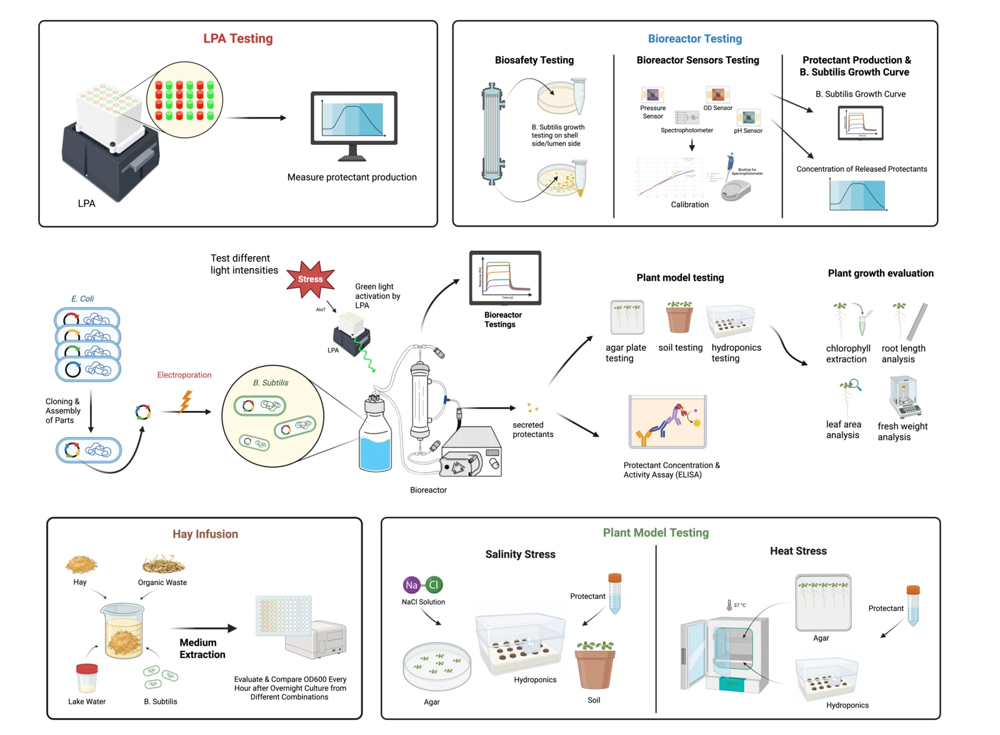
- Used run for results reported on this wiki
- Not run yet written, but no result on this wiki came from it
- Protocol ready a finished procedure whose results are reported elsewhere
Protocols
Molecular cloning
Culture agar preparation UsedPrepare and make agar plates to cultivate bacteria.
- Batch
- 250 mL LB agar with 2 mL glycerol
- Conditions
- Autoclave 30 min; antibiotic added once the flask has cooled
- Ran for
- Every plate on this wiki
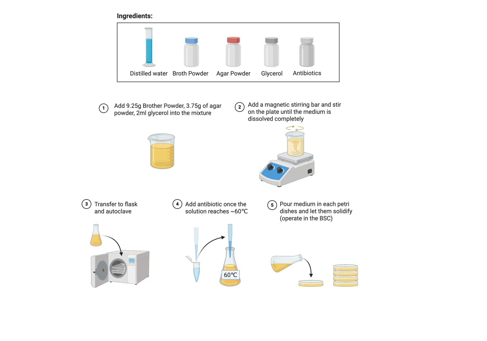
Materials and procedure, as written on the sheet
Materials
- Agar powder
- ddH2O
- Glycerol
- 500 mL flask
- Magnetic stirrer
- Antibiotics
- Ampicillin
- Chloramphenicol
- Erythromycin
Procedure
- Add 250 mL ddH2O, 9.25 LB agar powder, and 2 mL glycerol to a 500 mL flask
- Add a stirring bar
- Stir the mixture until all powder are dissolved
- Cover the flask with aluminum foil and an autoclave indicator stuck on top
- Autoclave for 30 min
- Put it in BSC while wait for it to cool down (can also stir before putting in BSC)
- Add 250 µL of antibiotics and gently mix it
- Distribute 250 µL of medium in plate
PCR amplification UsedA nucleic acid amplification technique to rapidly produce copies of DNA segments from a small initial sample.
- Reaction
- 50 µL with TaKaRa Ex Taq
- Cycling
- 25 cycles; anneal 50 to 72 °C, extend 1 min per kb
- Ran for
- Every part on Parts
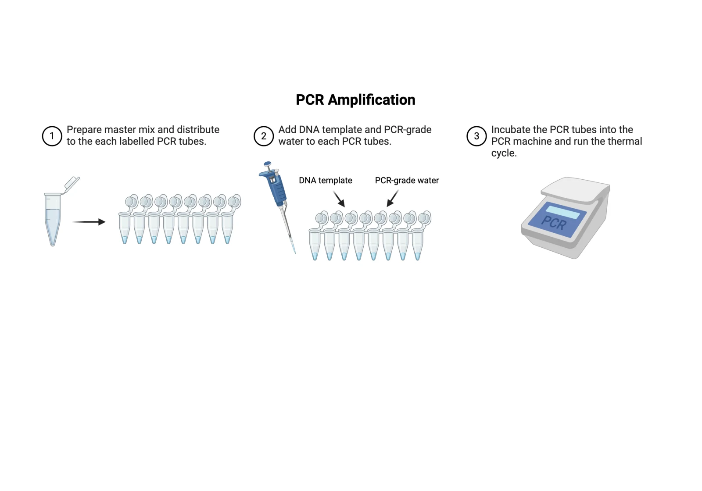
Materials and procedure, as written on the sheet
Ex Taq DNA polymerase (Takara)
Materials
- 10x Taq buffer
- 2.5 mM dNTP
- 10 μM forward primer
- 10 μM reverse primer
- DNA template (10 ng/μL)
- TaKaRa Ex Taq™
- PCR-grade water
- PCR machine
Procedure
- Prepare reaction as follows
Reagent 1 reaction (50 μL) 10x Ex Taq buffer 5 μL 2.5 mM dNTP 4 μL 10 μM forward primer 1 μL 10 μM reverse primer 1 μL Template (10 ng/μL) 2 μL TaKaRa Ex Taq™ 0.25 μL PCR-grade water 36.75 μL - Incubate in the PCR machine and run the following thermal cycle.
Step Temperature Duration Initial denaturation 98 °C 30 sec 25 cycles: denature 98 °C 10 sec 25 cycles: annealing 50 to 72 °C 30 sec 25 cycles: extension 72 °C 1 min/kb Final extension 72 °C 2 min
Restriction enzyme digestion UsedLinearize purified plasmids with restriction enzymes to verify their sizes.
- Reaction
- 20 µL on ice, 500 ng plasmid
- Buffer
- 1X CutSmart
- Ran for
- The verification digests on Engineering
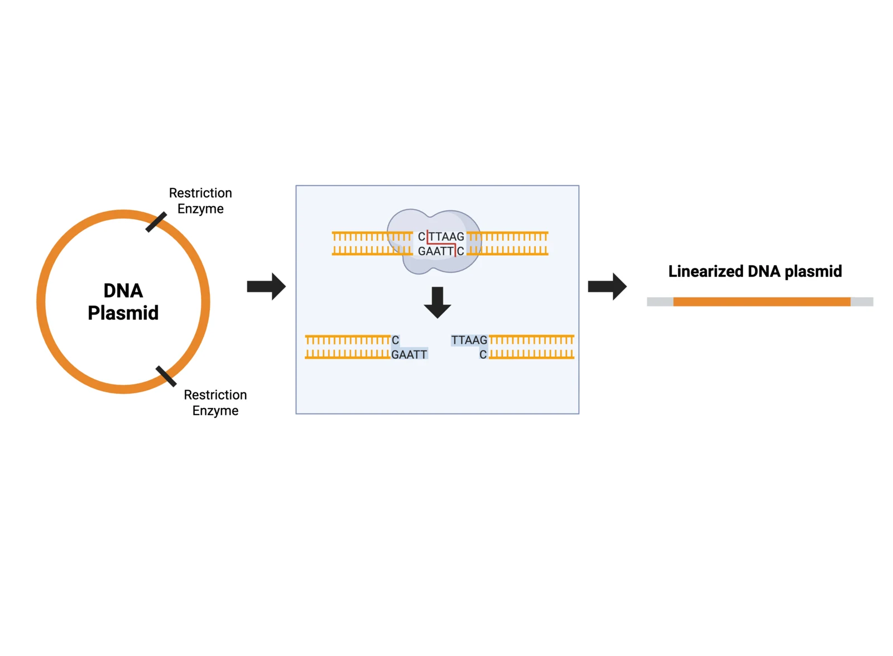
Materials and procedure, as written on the sheet
Materials and components
- Target DNA (plasmid of interest)
- Restriction enzyme
- 10X CutSmart buffer
- Sterile ddH2O
Procedure
- Set up the following reaction on ice
\[ \text{Volume of DNA } (\mu\text{L}) = \frac{\text{desired DNA mass (ng)}}{\text{DNA concentration (ng}/\mu\text{L)}} \]
*desired DNA mass = 500 ng
- Calculate the reaction formula.
Reagent Final conc. or amount 1 reaction 10X CutSmart buffer 1X 2 μL Restriction enzyme 20 units/μL 0.5 μL DNA template 500 ng 500 (ng) / plasmid conc. ddH2O Top up to 20 μL 20 − (sum of everything else)
DNA gel electrophoresis UsedResolve specific DNA fragments to allow visual verification and confirmation of product band sizes.
- Gel
- 20 mL agarose in 1X TAE, safe stain 1:20,000
- Run
- 100 V for 30 minutes, 5 μL per well
- Ran for
- Every gel figure on Engineering and Parts
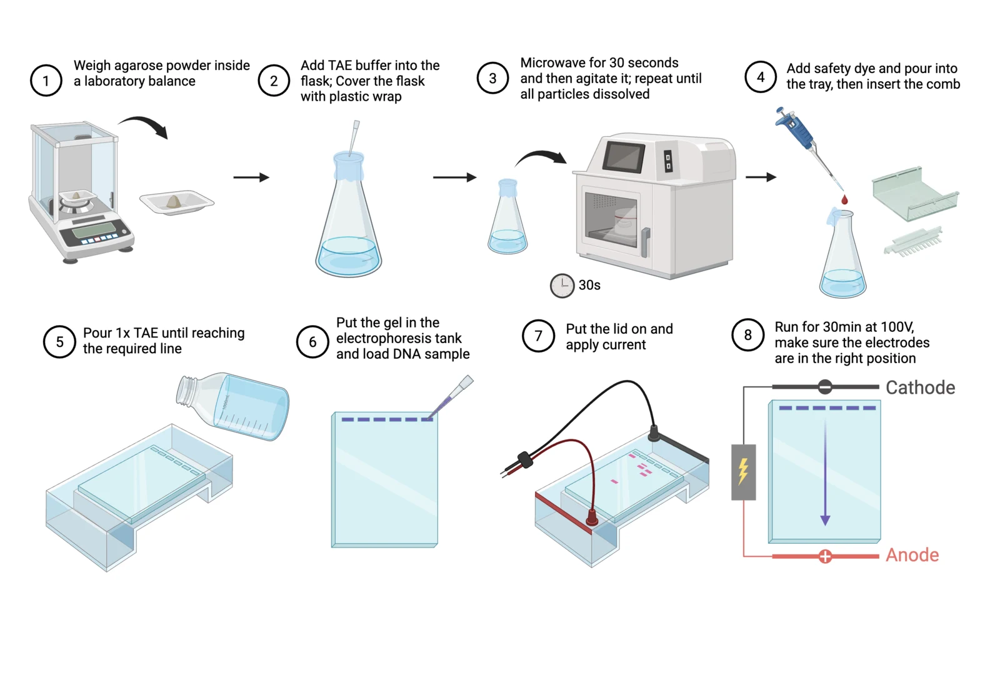
Materials and procedure, as written on the sheet
Making agarose gel: materials
- Agarose powder
- 1X TAE buffer
- Plastic wrap
- Agarose gel mold, tray, comb
- 6X DNA safety dye (BioGreen™ Safe DNA Gel buffer)
- Pipette
Making agarose gel: procedure
- Assemble the tray, comb, and mold.
- Add the appropriate amount of agarose powder according to the desired agarose concentration.
- Add 20 mL of 1X TAE buffer to the flask and mix thoroughly.
- Cover with plastic wrap and use a 1000 µL tip to poke 4 to 5 holes in the plastic wrap.
- Microwave for 30 seconds then carefully swirl or agitate the flask.
- Repeat step 5 until the agarose is completely dissolved and the solution becomes clear.
- Remove the plastic wrap and wait until it is no longer smoking
- Dilute the safe stain at a 1:20,000 ratio into the mixture and pipette
- Pour the mixture into the mold.
- Use the pointed end of a 1000 µL pipette tip to remove surface air bubbles, and use the flat end to gently release any air bubbles trapped at the bottom of the tray.
- Solidify at room temperature.
Loading samples
Samples and ladder preparation:
- PCR product: no dye is needed
- Miniprep product: add 1 μL of dye to every 5 μL of DNA on parafilm
- Pour 1X TAE buffer until it covers the gel
- Place the gel in with the gel tank.
- Add 5 μL of DNA ladder or samples in each well. Ladder (1 kb or 3 kb, ladder size must exceed sample base pairs)
- Run the gel at 100 V for 30 minutes
Golden Gate assembly UsedClone and assemble multiple core genetic parts of the light-controlled optogenetic circuit.
- Reaction
- 20 µL: 10 fmol vector, 20 fmol insert, T4 ligase, type IIS enzyme
- Ratios
- Vector to insert 1:1 up to 1:7
- Ran for
- Level 0, level 1 and level 2 on Parts
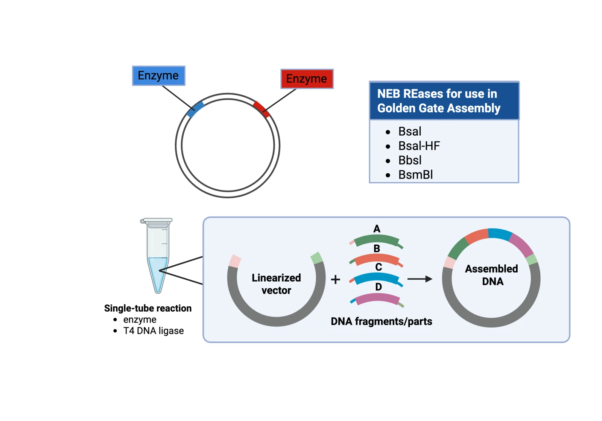
Materials and procedure, as written on the sheet
Materials
DNA plasmids, for construction of the optogenetic system:
| Vector | Promoter | RBS | CDS | Terminator | |
|---|---|---|---|---|---|
| Level 0 | pSTK-0-sfGFP | All individual parts | |||
| Level 1 | pSTK-1A-sfGFP | Ptag | RBS | Ho1-pcyA | L3S2P21 |
| pSTK-1B-sfGFP | PliaG, PlepA | RBS0 | ccaSm3 | B0015 | |
| pSTK-1C-sfGFP | Pveg | RBS0 | ccaR | B0015 | |
| pSTK-1D-sfGFP | PcpcG2 | EEBD-RBS0 | Csn:Lea, Csn:ACCD | B0015 | |
| Level 2 | pSTK-EXP-1-sfGFP | Pveg | EEBD-RBS0 | B0015, L3S2P21 | |
| pSTK-EXP-2-sfGFP | Pveg | EEBD-RBS0 | csn:AmilCP | B0015 | |
For construction of the constitutive expression system (vector pSTK-EXP1, promoter Pveg, RBS0, terminator B0015):
- Wildtype: SamyQ-LEA, SamyQ-BoPep4, SamyQ-ACCD
- Codon optimization: SamyQ-LEA-v2t1, SamyQ-LEA-v2t2, SamyQ-BoPep4-v2t1, SamyQ-BoPep4-v2t2, SamyQ-ACCD-v2t1, SamyQ-ACCD-v3t1
- Truncated: Bopep4_9-23_NHis, Bopep4_G17A_1-23_NHis, Bopep4_S15A_1-23_NHis, Bopep4_WT_1-23_NHis
- T4 DNA ligase buffer
- T4 DNA ligase
- Enzyme (dependent on which vector we use)
- BsaI
- BsaI-HF
- BbsI
- BsmBI
- Ice bucket
- Sterile ddH2O
Procedures
| Reagent | Final volume |
|---|---|
| Vector (10 fmol) | X µL |
| Inserts (20 fmol) | X µL |
| T4 DNA ligase | 1 µL |
| T4 DNA ligase 10X buffer | 2 µL |
| Enzyme | 1 µL |
| ddH2O | 20 − (sum of everything else) |
| Total volume | 20 µL |
Formula for calculating vector and insert volume. Vector to insert ratio: 1:1, 1:2, 1:3, 1:5, 1:7
Run PCR program
| Stages | Temperature | Time | Cycles |
|---|---|---|---|
| Initial denaturation | 95 °C | 2 min | 1 cycle |
| Denaturation | 95 °C | 30 sec | 30 cycles |
| Annealing | 65 °C | 40 sec | |
| Extension | 72 °C | 2.5 min | |
| Final extension | 72 °C | 1 min | 1 cycle |
E. coli transformation UsedIntroduce foreign plasmid DNA in competent cells in order to replicate plasmids in E. coli.
- Cells
- 100 µL DH5α with 10 µL plasmid
- Heat shock
- 42 °C for 45 seconds, 1 h recovery in SOC
- Ran for
- Every cloning step on Parts
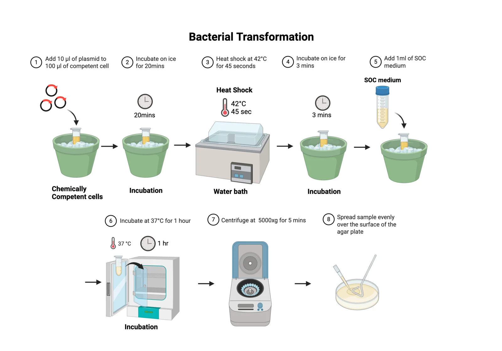
Materials and procedure, as written on the sheet
Materials
- SOC medium
- LB medium
- 0.5 M sorbitol
- 0.38 M mannitol
- Competent cells
- DH5α competent cells
- Plasmid
- LB plate
- With ampicillin for level 1 construct
- With chloramphenicol for level 0 and 2 constructs
- Ice bucket with ice
- Water bath
- Cell spreader
- Bunsen burner
Procedure
- Set the water bath to 42 °C and prepare an ice bath.
- Get plates (depending on antibiotics selection) and pre-warm them at 37 °C.
- Thaw competent cells on ice until they are 50% thawed and add 10 µL of plasmid to 100 µL of competent cells.
- Incubate on ice for 20 min
- Heat shock 42 °C for 45 seconds
- Incubate on ice for 3 min
- Add 1 mL SOC medium
- Incubate for 1 hr at 37 °C
- Centrifuge at 5000 x g for 5 min
- Remove ~1 mL supernatant and resuspend
- Spread on plate
- Incubate at 37 °C for 16 hours
Electroporation into B. subtilis UsedIntroduce foreign plasmid DNA in competent cells through exponential electrical flow in order to replicate plasmids in B. subtilis.
Competent cells for strain 168 are grown to OD₆₀₀ 0.85 to 0.95; the sheet also carries a WB800 method.
- Pulse
- 0.2 cm cuvette, 2.1 to 2.5 kV, 25 µF, 250 to 300 Ω
- Recovery
- 2 mL SOC, 3 h at 37 °C, 200 rpm
- Ran for
- Strain 168 only
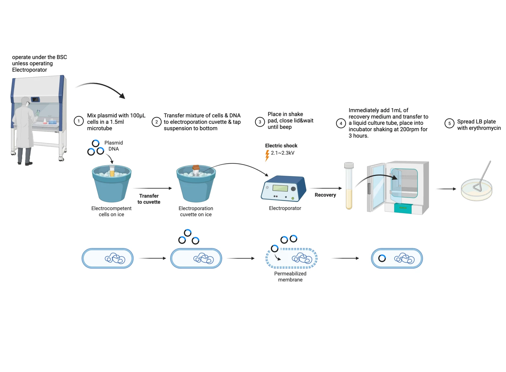
Materials and procedure, as written on the sheet
Materials
- Recovery medium
- LB medium
- 0.5 M sorbitol
- 0.38 M mannitol
- Competent cells
- Bacillus subtilis 168 electrocompetent cells
- Bacillus subtilis WB800 electrocompetent cells
- EP buffer
- Plasmid
- Electroporation cuvette
- 1.5 mL microtube
- Electroporator
- Centrifuge
- LB plate with erythromycin
- Ice bucket with ice
- Water bath
- Cell spreader
- Bunsen burner
Making electrocompetent cells for B. subtilis 168
- Dilute the overnight bacteria culture to 16-fold in growth medium
- Incubate the diluted culture at 37 °C with shaking at 200 rpm until the OD₆₀₀ reaches 0.85 to 0.95.
- Cool the culture on ice for 5 min.
- Centrifuge the culture at 5,000 × g for 10 min
- Carefully discard the supernatant and wash the cell pellet twice with ice-cold EP buffer.
- Resuspend the pellet in 1/20 of the original culture volume of electroporation medium.
- Aliquot the electrocompetent cells into pre-chilled microcentrifuge tubes
- Store the electrocompetent cells at −80 °C until use.
Making electrocompetent cells for B. subtilis WB800
- Dilute the overnight bacteria culture to 16-fold in growth medium
- Incubate the diluted culture at 37 °C with shaking at 200 rpm until the OD₆₀₀ reaches 2.2.
- Cool the culture on ice for 5 min.
- Centrifuge the culture at 5,000 × g for 10 min.
- Carefully discard the supernatant and wash the cell pellet four times with ice-cold EP buffer with 0.5 mol/L trehalose.
- Resuspend the cells in 1/40 of the original culture volume of ice-cold EP buffer.
- Aliquot the electrocompetent cells into pre-chilled microcentrifuge tubes
- Store the electrocompetent cells at −80 °C until use.
Electroporation of cells
- Prewarm SOC Recovery medium in 37 °C
- Pre-chill 0.2 cm electroporation cuvette
- Mix plasmid with 100 µL of electrocompetent cell mixture in a 15 mL centrifuge tube. Plasmid volume to add:
- Set up electroporator (Gene Pulser Xcell)
Parameters Bacillus subtilis 168 Bacillus subtilis WB800 Voltage 2.1, 2.2, 2.3 kV 2.1, 2.3, 2.5 kV kV Resistance 300 Ω 250 Ω Ω Capacitance 25 µF 25 µF µF - Transfer the mixture of cells and DNA to a cold electroporation cuvette and flip the suspension to the bottom.
- Place the cuvette in the shock pod, close the lid, and wait for the beep (approximately 1 to 2 s).
- Immediately remove from the shock pod and add 2 mL SOC medium.
- Check and record the parameter.
- Transfer to liquid culture tube & incubate at 37 °C for 3 hrs, shaking at 200 rpm
- Centrifuge the tubes at 5000 x g for 5 minutes.
- Plate the transformed cells onto selective LB agar plates containing erythromycin or chloramphenicol and incubate at 37 °C overnight
Colony PCR UsedRapidly screen individual bacterial colonies to verify the presence of the desired DNA insert or recombinant construct using the colony as the PCR template.
Each picked colony is also streaked onto a gridded backup plate.
- Reaction
- 20 µL, 2X ScreeningFire Taq master mix
- Cycling
- 30 cycles, anneal 65 °C, extend 2.5 min
- Ran for
- Every screening panel on Engineering
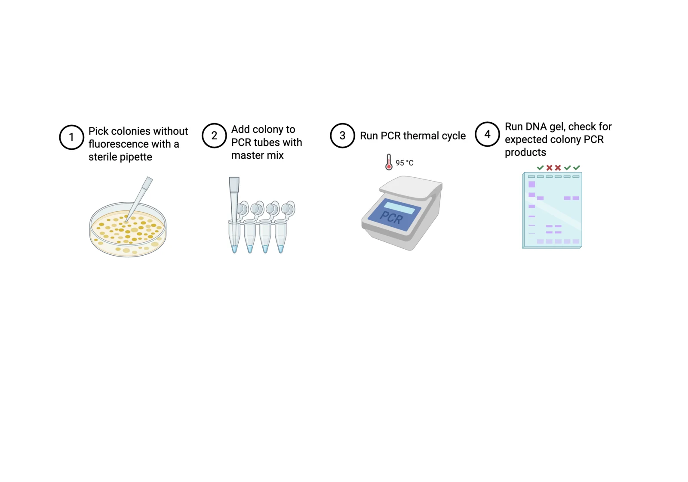
Materials and procedure, as written on the sheet
Materials
- Plate with bacterial colonies
- Empty plate (depends on antibiotics selection)
- Individual PCR tube or PCR 8-strip tubes
- Forward primer (10 μM)
- Reverse primer (10 μM)
- Q-Amp 2X ScreeningFire Taq Master Mix
- ddH2O
- PCR machine
Procedure
- Label the empty plate and draw a grid on it (based on how many colonies).
- Prepare the following reaction(s) based on the amount of colonies.
1 reaction Final Volume Q-Amp 2X ScreeningFire Taq Master Mix 1X 10 μL Forward primer (10 μM) 0.5 μM 1 μL Reverse primer (10 μM) 0.5 μM 1 μL ddH2O (top up to total volume of 20 μL) 8 μL Total volume 20 μL - Pipette 20 μL of the master mix to each PCR tube.
- Pick up a colony with a micropipette tip.
- Streak the bacteria onto the corresponding grid box.
- Dispense the tip in a PCR tube.
- Repeat this step for all colonies.
- Place into PCR machine for thermal cycle.
Run PCR program
| Stages | Temperature | Time | Cycles |
|---|---|---|---|
| Initial denaturation | 95 °C | 2 min | 1 cycle |
| Denaturation | 95 °C | 30 sec | 30 cycles |
| Annealing | 65 °C | 40 sec | |
| Extension | 72 °C | 2.5 min | |
| Final extension | 72 °C | 1 min | 1 cycle |
Liquid bacterial culture UsedGrow bacteria such as E. coli or B. subtilis in nutrient-rich broth, allowing rapid multiplication in a suspended, aerated environment.
- Culture
- 3 mL TB with antibiotic at 1:1,000
- Time
- 16 hours, tube at a slant
- Ran for
- Every miniprep and extraction
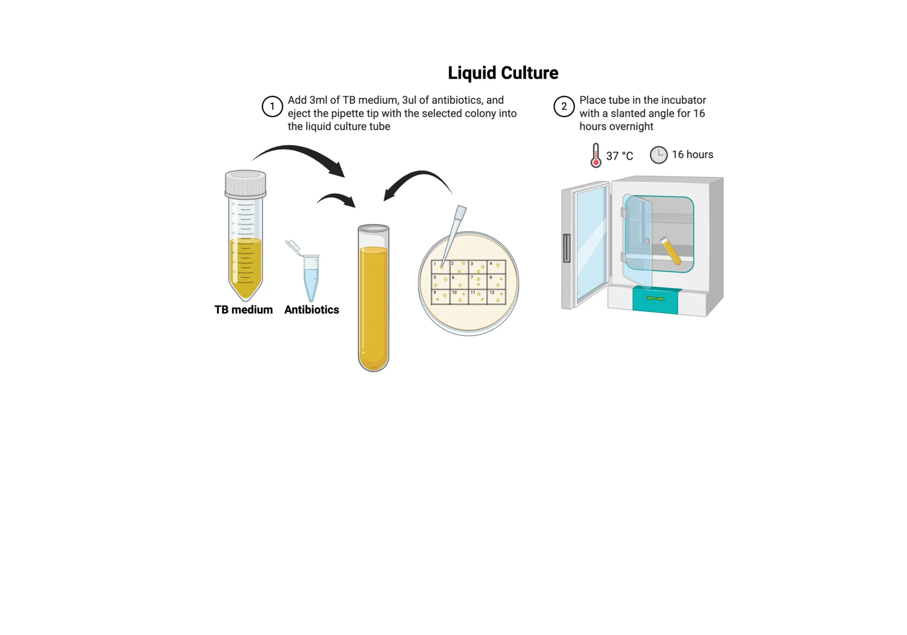
Materials and procedure, as written on the sheet
Materials
- Plate with bacterial colonies
- Liquid culture tubes
- TB medium
- Antibiotics
- Chloramphenicol ()
- Ampicillin (25 mg/mL)
- Erythromycin ()
- Bunsen burner
- Pipette
- Incubator
Procedure
- Label liquid culture tubes
- Add 3 mL of TB medium and antibiotics at a 1:1,000 dilution to each culture tube.
- Dip a pipette on the selected colony
- Dispense the tip into tube
- Place the tube in the incubator and incubate for 16 hours with the tube positioned at a slant angle.
DNA isolation UsedIsolate plasmid DNA from bacterial cultures for concentration measurement and downstream applications.
Plasmid is pulled out of an overnight culture with the Viogene Mini Plus kit [3] and measured on the BioDrop.
- Input
- Overnight culture, 1.8 mL at a time
- Output
- 50 µL eluate; concentration, A260/230 and A260/280
- Ran for
- Every sequencing submission on Parts
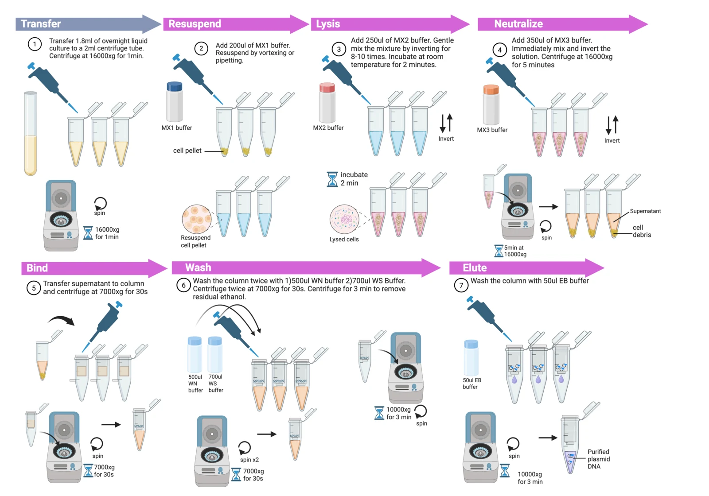
Materials and procedure, as written on the sheet
Materials
- Bacterial culture
- Mini Plus Plasmid DNA Extraction Kit (Viogene)
- Centrifuge
- Pipette
- BioDrop machine
Procedure
- Transfer 1.8 mL of overnight bacterial culture to 2 mL microcentrifuge tube.
- Centrifuge at 16,000 x g for 1 minute.
- Discard supernatants.
- Repeat steps 1 to 3 until all culture medium has been processed and pellets collected.
- Use Viogene Mini Plus kit for DNA isolation.
- Add 200 μL of MX1 buffer.
- Resuspend pellets by pipetting or vortexing.
- Add 250 μL of MX2 buffer.
- Gently mix the buffer well (do not vortex) and invert 8 to 10 times.
- Incubate the mixture at room temperature for 2 minutes.
- Add 350 μL MX3 buffer.
- Immediately mix and invert the solution.
- Centrifuge at 16,000 x g for 5 minutes.
- While centrifuging, assemble and label column collection tubes.
- Transfer supernatant (~900 μL) to column and centrifuge at 7,000 x g for 30 seconds.
- Discard flow-through.
- Add 500 μL WN buffer and centrifuge at 7,000 x g for 30 seconds. Discard flow-through.
- Add 700 μL WS buffer and centrifuge at 7,000 x g for 30 seconds. Discard flow-through.
- Centrifuge empty column at 10,000 x g for 3 minutes to remove residual ethanol.
- Place column into new 1.5 mL microcentrifuge tube.
- Add 50 μL elution buffer onto the center of the membrane and incubate the column at room temperature for 3 minutes.
- Centrifuge at 10,000 x g for 3 minutes.
- Turn on Biodrops and correct the settings.
- Clean micro-volume sample port with ddH2O, EtOH, then ddH2O.
- Measure the elution buffer as blank.
- Measure the concentration, A260/230, A260/280 of the samples and record on the tubes and in the lab notebook.
- Clean micro-volume port with ddH2O, EtOH, then ddH2O.
Recombinant protein production
Bradford protein assay Not run yetA colorimetric method for quantifying protein concentration in a sample.
Concentration is read against a six-point BSA standard curve at 595 nm [2].
- Standards
- BSA, 100 to 600 µg/mL, six points
- Read
- 595 nm after 5 to 10 min in the dark
- Ran for
- No result on this wiki
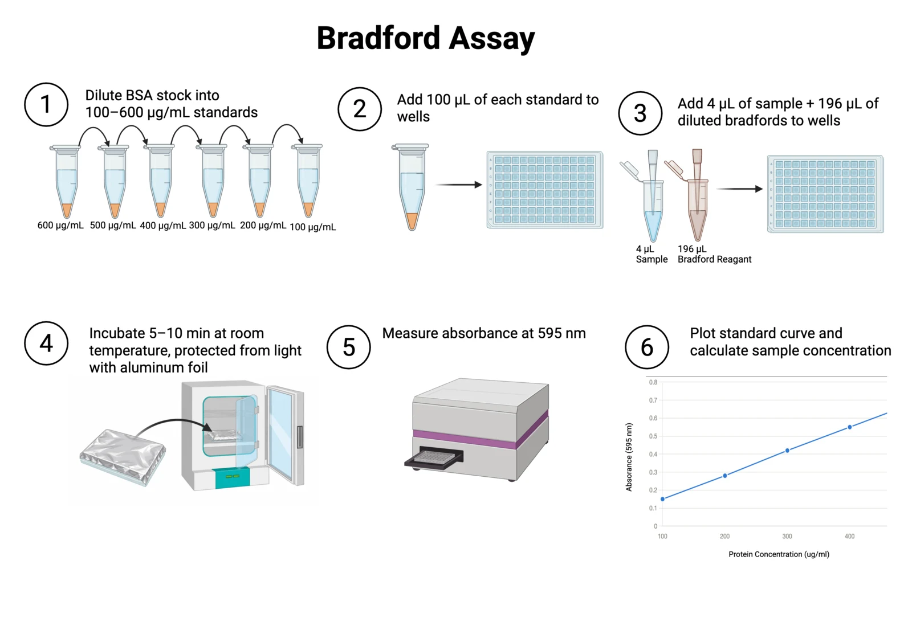
Materials and procedure, as written on the sheet
Materials
| Item | Amount |
|---|---|
| Bradford reagent (e.g., Coomassie Brilliant Blue G-250-based) | As required |
| BSA stock solution (2 mg/mL) | As required |
| ddH₂O | As required for dilution |
| Protein sample(s) to be quantified | As required |
| 96-well microplate (or cuvettes, if using a spectrophotometer instead of plate reader) | 1 |
| Microplate reader (or spectrophotometer set to 595 nm) | 1 |
| Multichannel or single-channel pipettes | As required |
Procedure
- Prepare the BSA standard curve by diluting 2 mg/mL BSA stock with ddH₂O into six tubes/wells, per the table below (100 µL total each):
µL 600 μg/mL 500 μg/mL 400 μg/mL 300 μg/mL 200 μg/mL 100 μg/mL BSA 30 25 20 15 10 5 ddH2O 70 75 80 85 90 95 - Dilute your protein sample(s) with ddH₂O if needed, so the expected concentration falls within the 100 to 600 µg/mL range of your standard curve.
- Add 100 µL of each standard into separate wells of the microplate. Include one well with 100 µL ddH₂O only as a blank.
- Add 196 µL of Bradford reagent + 4 µL of samples to every well, only add Bradford reagent to blank. Mix gently (e.g., by pipetting up and down or gentle shaking); avoid making bubbles, since they interfere with the absorbance reading.
- Incubate at room temperature for 5 to 10 minutes, protected from light. Color development (brown to blue) happens during this window.
- Measure absorbance at 595 nm using a microplate reader, zeroing/blanking against the ddH₂O-only well.
- Plot the standard curve: absorbance (y-axis) vs. known BSA concentration (x-axis) for your six standards, and fit a linear trendline.
- Use the trendline equation to calculate your unknown sample concentrations from their measured absorbance values.
- Run standards and samples in duplicate or triplicate if possible, and average the results for better accuracy.
General formula
Total volume needed = (number of wells) × (volume per well) × 1.1. The ×1.1 (10% extra) accounts for pipetting loss, dead volume in tubes, and reagent that sticks to pipette tips.
- Bradford reagent. Volume needed = (total number of wells: standards + blank + samples) × 100 µL × 1.1. Example: 6 standards + 1 blank + 3 samples = 10 wells → 10 × 100 µL × 1.1 = 1,100 µL (1.1 mL) of Bradford reagent
- BSA stock (2 mg/mL) for the standard curve. This is fixed regardless of how many samples you run, since it only depends on your 6-point standard curve: volume needed = (30 + 25 + 20 + 15 + 10 + 5) µL × 1.1 = 105 × 1.1 = ~116 µL, round up to ~120 µL of 2 mg/mL BSA stock. If running standards in duplicate or triplicate, multiply by 2 or 3 first, then apply the ×1.1.
- ddH₂O. Two separate uses, add them together: for standard dilutions, (70 + 75 + 80 + 85 + 90 + 95) µL × 1.1 = 495 × 1.1 = ~545 µL; for the blank well(s), 100 µL × (number of blank wells) × 1.1; for diluting samples (if needed), depends on your sample's starting concentration: use C₁V₁ = C₂V₂ to figure out how much water dilutes your sample into the 100 to 600 µg/mL range, then add that volume too.
- Protein sample. Volume needed = 100 µL × (number of replicate wells for that sample) × 1.1. If you're testing 3 samples in triplicate: 100 µL × 3 replicates × 3 samples × 1.1 = ~990 µL total sample volume needed (split across your 3 actual samples, so ~330 µL each before replicating).
Trial scale protein extraction UsedEvaluate protein extraction conditions on a small scale before proceeding to large-scale production.
Lysis and clarification conditions are settled on 5 to 50 mL, and the sheet asks whether the cargo is in the medium or still inside the cell.
- Scale
- 5 to 50 mL culture
- Conditions
- Spin 4,000 to 8,000 × g at 4 °C; CelLytic B dilutions on 1.5 mL pellets
- Ran for
- The cultures behind the August blots
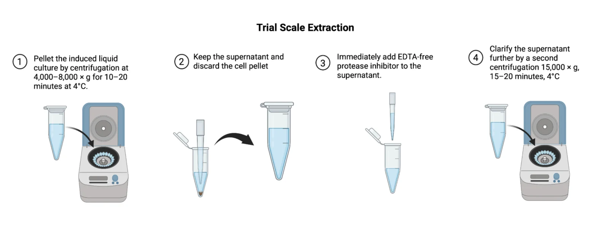
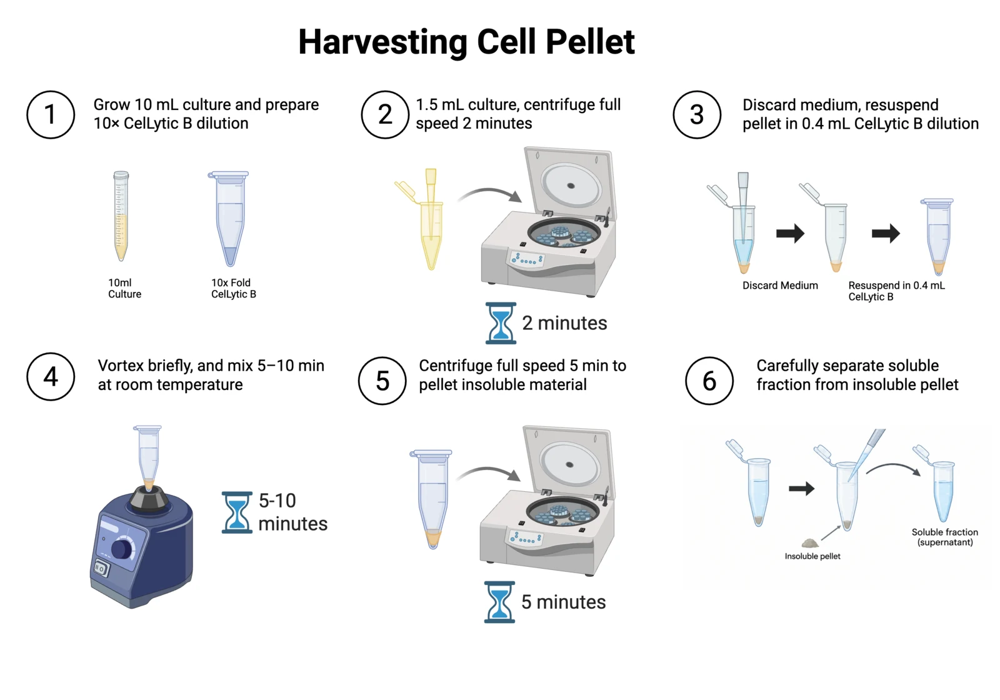
Materials and procedure, as written on the sheet
Harvest the supernatant: materials
| Item | Amount |
|---|---|
| Liquid culture of B. subtilis | Small scale, 5 to 50 mL |
| Centrifuge tubes | Sized to culture volume |
| Centrifuge | 1 |
| EDTA-free protease inhibitor | As required (follow product dilution) |
| Fresh clean tubes for supernatant | As required |
| Ice bucket / 4 °C access | As required |
Harvest the supernatant: procedure
- Centrifuge at 4,000 to 8,000 × g for 10 to 20 min at 4 °C to separate the cell pellet and supernatant.
- Retain the supernatant and cell pellet for later use.
- Immediately add EDTA-free protease inhibitor to the supernatant.
- Clarify the supernatant further by a second centrifugation (e.g., 15,000 × g, 15 to 20 minutes, 4 °C)
Harvest the cell pellet: materials
| Item | Amount |
|---|---|
| Liquid culture of B. subtilis | Small scale, 5 to 50 mL |
| Centrifuge tubes | Sized to culture volume |
| Centrifuge | 1 |
| CelLytic B 10X concentrate | 10-fold |
| EDTA-free protease inhibitor | As required (follow product dilution) |
| Fresh clean tubes for supernatant | As required |
| Ice bucket / 4 °C access | As required |
| Vortex | 1 |
Harvest the cell pellet: procedure
- Prepare 10-fold dilution of CelLytic B 10X into your chosen buffer.
- Grow a 10 mL culture of your B. subtilis strain under normal induction conditions.
- Take 1.5 mL of culture (OD600 0.5 to 1.0) per dilution condition, and centrifuge at full speed for 2 minutes to pellet the cells. Prepare one tube per CelLytic B dilution
- Remove and discard the medium, then resuspend each cell pellet in 0.4 mL of a different CelLytic B dilution.
- Vortex briefly, then mix for 5 to 10 minutes at room temperature to let the detergent extract soluble proteins.
- Centrifuge at full speed for 5 minutes to pellet insoluble material.
- Carefully separate the supernatant (soluble protein fraction) from the pellet (insoluble/inclusion body fraction).
Large scale protein extraction Not run yetAfter establishing suitable conditions on a small scale, scale up the bacterial culture to produce a larger amount of the target protein.
The settled conditions run on 100 to 500 mL of induced culture. The pellet is lysed with CelLytic B plus lysozyme, protease inhibitor and DNase I [5].
- Scale
- 100 to 500 mL induced culture
- Lysis
- 10 to 20 mL CelLytic B per gram of cell paste
- Ran for
- No result on this wiki
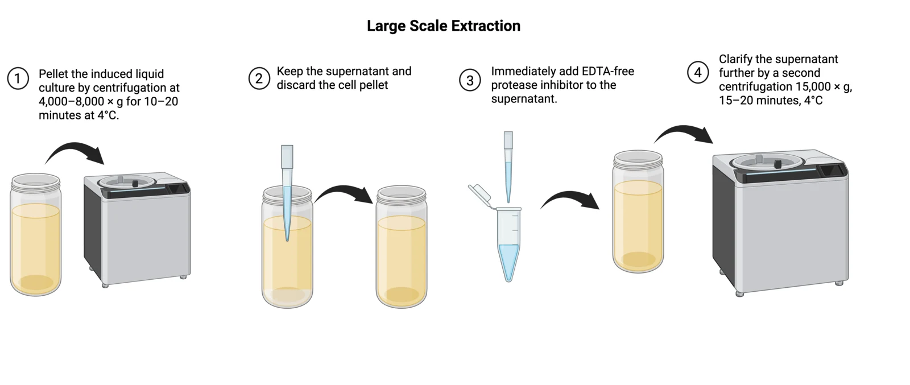
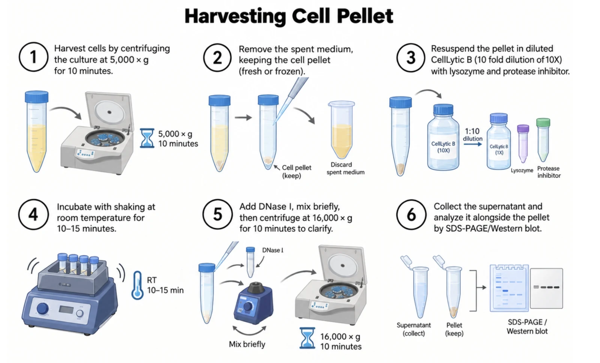
Materials and procedure, as written on the sheet
Harvest the supernatant: materials
| Item | Amount |
|---|---|
| Liquid culture of B. subtilis | 100 mL to 500 mL |
| Centrifuge tubes | Sized to culture volume |
| Centrifuge | 1 |
| EDTA-free protease inhibitor | As required (follow product dilution) |
| Fresh clean tubes for supernatant | As required |
| Ice bucket / 4 °C access | As required |
Harvest the supernatant: procedure
- Pellet the induced liquid culture by centrifugation at 4,000 to 8,000 × g for 10 to 20 minutes at 4 °C.
- Keep the supernatant and discard the cell pellet
- Immediately add EDTA-free protease inhibitor to the supernatant.
- Clarify the supernatant further by a second centrifugation (e.g., 15,000 × g, 15 to 20 minutes, 4 °C)
Harvest the cell pellet: materials
| Item | Amount |
|---|---|
| Liquid culture of B. subtilis | Small scale, 5 to 50 mL |
| Centrifuge tubes | Sized to culture volume |
| Centrifuge | 1 |
| CellLytic B 10X concentrate | 10-fold |
| EDTA-free protease inhibitor | As required (follow product dilution) |
| Lysozyme (10 mg/mL stock) | 20 µL per 1 mL lysis buffer (scale to 0.4 mL: 8 µL) |
| Protease inhibitor (100X stock, EDTA-free) | 10 µL per 1 mL lysis buffer (scale to 0.4 mL: 4 µL) |
| DNase I (20 mg/mL stock, diluted 1:100 to 200 µg/mL working stock) | 25 µL of working stock per 1 mL lysis buffer (scale to 0.4 mL: 10 µL) |
| Wet cell paste | 1 g = 250 mL culture, OD600 ~2.0 |
| Fresh clean tubes for supernatant | As required |
| Ice bucket / 4 °C access | As required |
| Vortex | 1 |
Harvest the cell pellet: procedure
- Harvest cells by centrifuging at 5,000 g for 10 minutes.
- Remove the spent medium from the pellet
- Prepare one 10-fold dilution of CelLytic B 10X into the chosen buffer
- Add the diluted CelLytic B at 10 to 20 mL per gram of cell paste, pre-mixed with lysozyme and protease inhibitor at the ratios above. Mix well to fully resuspend the pellet.
- Incubate with shaking at room temperature for 10 to 15 minutes.
- Add DNase I working stock at the ratio above and mix briefly to reduce viscosity before centrifuging.
- Centrifuge at 16,000 g for 10 minutes to pellet insoluble material.
- Carefully collect the supernatant (soluble protein fraction).
- Analyze supernatant and pellet by SDS-PAGE/Western blot to confirm target protein's location.
Protein purification and dialysis Not run yetTo remove residual salts and concentrate the desired protein following large-scale production.
The His-tagged protectant comes off a HisPur Ni-NTA spin column and the imidazole and salt are then dialysed back out [4]. The sheet ends with regenerating the column.
- Column
- Ni-NTA; imidazole 10, 25 and 150 mM to equilibrate, wash, elute
- Dialysis
- 10K MWCO cassette, three changes of 1.6 L PBS pH 8 on ice
- Ran for
- No result on this wiki
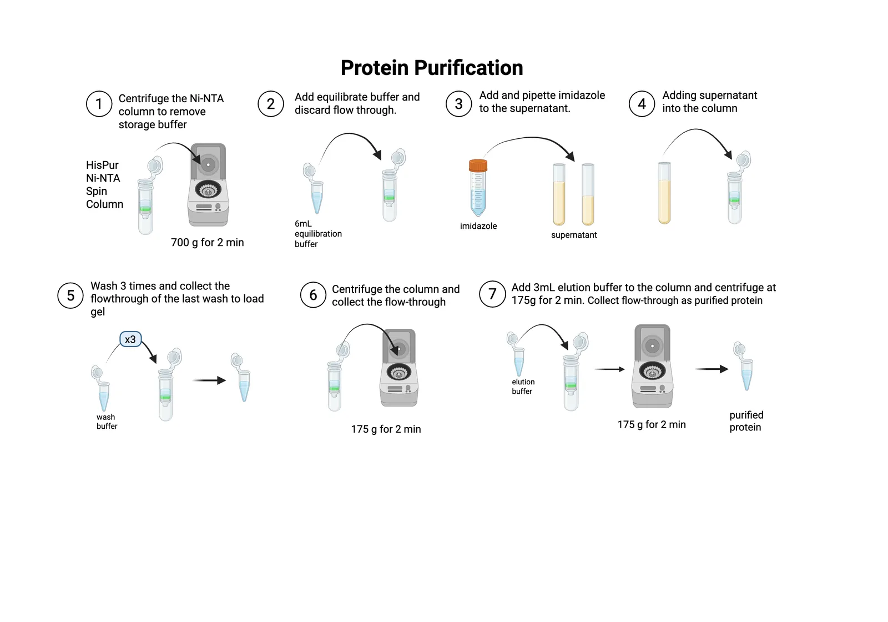
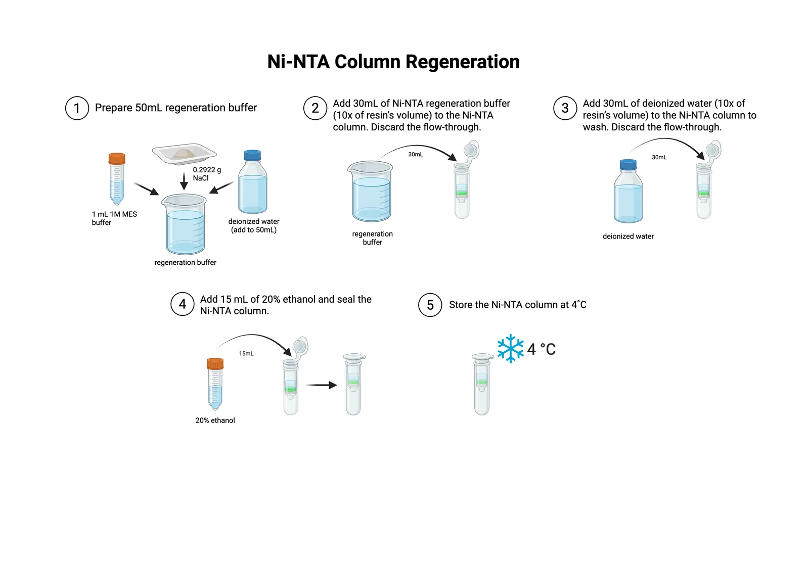
Materials and procedure, as written on the sheet
Materials
| Item | Amount |
|---|---|
| Overnight liquid culture of His-tagged protein expression strain | As required (e.g., 50 to 1000 mL, induced) |
| Centrifuge (for cell harvest and supernatant clarification) | 1 |
| HisPur Ni-NTA Purification Kit | 1 (choose spin column size) |
| 10X PBS (200 mM sodium phosphate, 3 M NaCl, pH 7.4) | Supplied in kit |
| 2 M imidazole, pH 7.4 | Supplied in kit |
| ddH2O | As required |
| Centrifuge tubes (1.5, 15, or 50 mL) | Several |
| Benchtop centrifuge (for spin columns) | 1 |
Procedure
- Use the following buffer for the procedures (formula for 50 mL and buffers are prepared/stocked beforehand)
Buffer Imidazole final (mM) 10x PBS (mL) 2 M imidazole (pM) Water (mL) Equilibrate buffer 10 5 250 44.75 Wash buffer 25 5 625 44.375 Elute buffer 150 5 3750 41.25 - Centrifuge the Ni-NTA column at 175 g for 2 min to remove storage buffer
- Add 6 mL of equilibrate buffer
- Before adding supernatant, add and pipette 237.5 µL of imidazole to the tube of supernatant with 47.5 mL volume and add 62.5 µL to the tube of supernatant with 12.5 mL volume
- Adding all supernatant into the column by washing the walls (sides) of the column
- Add 6 mL of wash buffer and remove the flow-through. Repeat this step 3 times. At the 3rd time, collect the flow-through to load gel
- Centrifuge at 175 g for 2 min
- Collect the flow-through from the last wash buffer step
- Add 3 mL of elute buffer
- Centrifuge at 175 g for 2 min
- Collect flow-through as purified protein
Protein dialysis: materials
- Clarified protein extract, as prepared
- 4.8 L 1X PBS pH 8
- Slide-A-Lyzer G3 Dialysis Cassettes, 10K MWCO, 3 mL (Thermo Fisher Scientific)
- Ice bags (3 to 4)
- ddH2O
- 2 L beakers (3)
- pH meter
- Plastic wrap
- Stir plate and stir bar
- Microtubes (1.5 mL)
Protein dialysis: procedure
- Dilute 10x PBS: mix 160 mL of 10x PBS and 1.6 L of deionized water
- Adjust pH to 8
- Top up H₂O to 1.6 L and wrap opening of beaker with plastic wrap
- Prepare three beakers of 1.6 L PBS
- Open the dialysis cassette by gently twisting the cap counterclockwise
- Add the protein lysate to the cassette, slowly withdrawing the pipette while dispensing. Don't overload the cassette
- Remove the excess air in the cassette by simultaneously pressing the membrane gently on both sides using gloved thumb and forefinger and insert the cap
- Insert cap and lock by gently twisting it clockwise until the arrows align and a firm stop is felt
- Place dialysis cassette in 2 L beaker with 1.6 L 1X PBS and stir bar. Stir on ice for 2 hours
- Replace 1X PBS and stir on ice for another 2 hours
- Replace 1X PBS and stir on ice overnight
- Transfer lysate containing recombinant protein from dialysis cassette to 1.5 mL microtubes
- The recombinant protein is stored at −80 °C
Ni-NTA column regeneration: materials
- 1 M MES buffer (pH 5.0) (Thermo Fisher Scientific), 1 mL
- NaCl, 0.2922 g
- Deionized water, 80 mL
- 20% ethanol, 15 mL
Ni-NTA column regeneration: procedure
- Prepare 50 mL regeneration buffer: add 1 mL 1 M MES buffer and 0.2922 g NaCl. Add deionized water to 50 mL.
- Add 30 mL of Ni-NTA regeneration buffer (10x of resin's volume) to the Ni-NTA column.
- Discard the flow-through.
- Add 30 mL of deionized water (10x of resin's volume) to the Ni-NTA column to wash.
- Discard the flow-through.
- Add 15 mL of 20% ethanol and seal the Ni-NTA column.
- Store the Ni-NTA column at 4 °C.
SDS-PAGE and Coomassie staining UsedTo separate proteins based on their molecular weight using polyacrylamide gel electrophoresis.
- Gel
- 8 mL resolver, 3 mL stacker per gel
- Run
- 200 V for 10 min, then 120 V for 45 to 60 min
- Ran for
- The August gels on Engineering
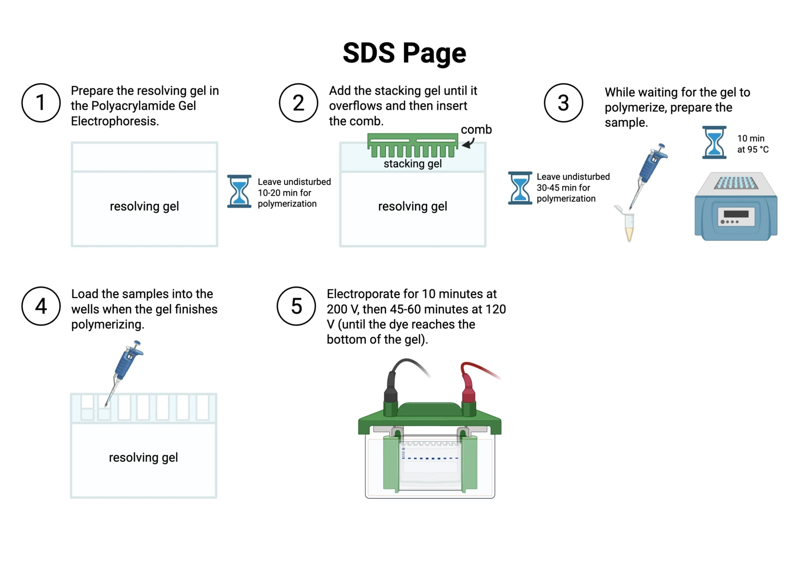
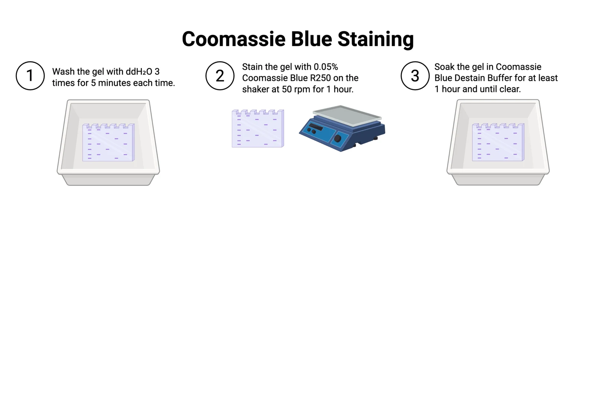
Materials and procedure, as written on the sheet
Materials
| Component | Stacker (top gel) | Resolver (bottom gel) |
|---|---|---|
| Resolver A | 4 mL × n | |
| Resolver B | 4 mL × n | |
| Stacker A | 1.5 mL × n | |
| Stacker B | 1.5 mL × n | |
| Total volume | 3 mL × n | 8 mL × n |
| TEMED | 3 µL × n | 4 µL × n |
| 10% APS | 15 µL × n | 40 µL × n |
Procedure
- Mix equal amounts of Resolver A and Resolver B solutions to prepare resolving gel acrylamide solution.
- Add 4 μL x n of TEMED and 40 μL x n of freshly prepared 10% APS to the resolving solution; mix thoroughly.
- Prepare the stacking gel by combining equal amounts of stacker A and B solutions (1.5 mL x n each).
- Add 3 μL x n of TEMED and 15 μL x n of freshly made 10% APS to the stacker solution; mix thoroughly.
- Carefully pipet the stacking solution straight down the middle of the cassette up to the top of the short plates, pouring smoothly so it does not mix with the resolving gel layer.
- Place the comb into the cassette alignment slots slowly to avoid trapping bubbles beneath the teeth.
- Leave the gel undisturbed for 30 to 45 minutes to complete polymerization before running.
- Combine 5 to 15 μL of protein supernatant with 6X Laemmli buffer (stored at 4 °C) to bring the total sample volume to 20 μL.
- Combine 5 μL of protein ladder (stored at −20 °C) with 1 μL of 6X Laemmli buffer.
- Heat all prepared tubes in a heat block at 95 °C for 10 minutes.
- Spin down the tubes briefly to collect liquid prior to loading.
- Load 2 to 3 μL of prepared protein ladder into both the first and last wells. Fill the middle wells with your protein samples. Fill any unused wells with 1X Laemmli buffer to prevent adjacent sample bands from spreading.
- Run the SDS-PAGE gel at a constant 200 V for 10 minutes until the sample tracking dye completely leaves the stacking layer and enters the bottom gel.
- Lower the voltage to 120 V (constant) and continue running for approximately 45 to 60 minutes until the dye front approaches the gel bottom.
Coomassie blue staining: materials
| Coomassie blue solution (50 mL) | % | mL |
|---|---|---|
| CBR-250 | 0.05 | 0.025 |
| Methanol | 50 | 25 |
| Acetic acid | 10 | 5 |
| ddH2O | 39.95 | 19.975 |
| Coomassie blue destain buffer (50 mL) | % | mL |
|---|---|---|
| Methanol | 30 | 15 |
| Acetic acid | 10 | 5 |
| ddH2O | 60 | 30 |
Coomassie blue staining: procedure
- Prepare the 50 mL staining and destain solutions according to the table above.
- Place the gel in a plastic container and wash with ddH2O on an orbital shaker 3 times (5 minutes per wash) to remove residual SDS.
- Use 0.05% Coomassie blue R250 for 1 hr on the shaker to stain the gel.
- Replace the stain with Coomassie blue destain buffer and shake for at least 1 hour until clear protein bands appear against a transparent background.
Western blotting UsedDetect a His-tagged protein on a membrane with an anti-His antibody.
Transfer to PVDF, block, anti-His primary overnight, HRP secondary, ECL.
- Load
- 30 to 50 μg total protein per well
- Antibodies
- Anti-His (AD1.1.10), then HRP goat anti-mouse
- Ran for
- 2, 7 and 24 August 2026
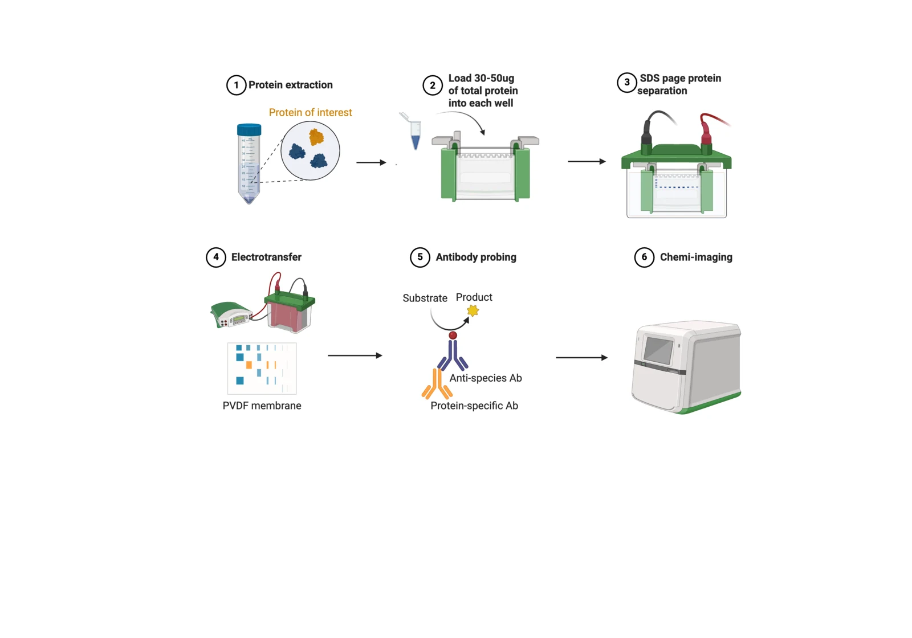
Materials and procedure, as written on the sheet
Overview, as written on the sheet: To separate proteins based on their molecular weight using polyacrylamide gel electrophoresis.
Materials
| Item | Amount (per gel) |
|---|---|
| SDS-PAGE sample gel | 1 sheet |
| Power supply | 1 unit |
| Wet transfer tank | 1 unit |
| Shaker | 1 unit |
| Chemiluminescence imager | 1 unit |
| Micropipettes | As required |
| PVDF membrane (Millipore) | 1 sheet |
| 3M filter papers | 2 sheets |
| Sponge pad | 2 |
| Cassette | 1 unit |
| 1X transferring buffer | As required |
| His-Tag Antibody (AD1.1.10) (sc-53073, Santa Cruz Biotechnology) | As required |
| Peroxidase AffiniPure® Goat Anti-Mouse IgG (H+L) (Jackson ImmunoResearch) | As required |
| T-Pro LumiDura Chemiluminescent Substrate (ECL) Kit (T-Pro Biotech) | 1 unit |
Gel collection
- Prepare protein samples in SDS sample/loading buffer.
- Denature the proteins by heating at 95 °C for 5 to 10 minutes.
- Spin down briefly in a microcentrifuge to gather condensation.
- Load 30 to 50 μg of total protein into each well.
- Run the gel under appropriate electrophoresis conditions:
- Stacking: apply 80 to 120 V until samples pass into the resolving gel.
- Separation: increase to 100 to 200 V until the dye front reaches the gel bottom.
Transferring
Assemble the transfer sandwich as follows:
- Submerge the PVDF membrane in 100% methanol for 1 minute, then soak in 1X transfer buffer for 3 minutes.
- Soak the polyacrylamide gel in 1X transfer buffer for 5 minutes.
- Pre-wet the 3M filter papers in 1X transfer buffer
Blocking
- Block non-specific binding sites by incubating the membrane in 5% non-fat milk at room temperature for 1 hour.
Antibody incubation
- Incubate the membrane with primary antibody overnight at 4 °C with continuous agitation.
- Wash the membrane 3 times using 1X TBST.
- Incubate with secondary antibody for 1 hour at room temperature with continuous agitation.
- Thoroughly wash the membrane 5 times using 1X TBST.
Detection
- Combine ECL reagents A and B in a 1:1 ratio.
- Apply the mixed ECL reagent evenly over the membrane to detect target protein bands via chemiluminescence.
Plant stress assays
Arabidopsis in soil UsedCultivate Arabidopsis seedlings on soil pots with a standard protocol.
Plants are raised in a 3-inch pot, and untreated plants are kept going for seed. Treatment starts about three weeks after transplanting.
- Timeline
- 3 days at 4 °C, 7 days on plates, about 3 weeks in soil
- Care
- Tray watering, Hyponex No. 2 at 1:1,000 on alternate waterings
- Ran for
- The soil planting progression record
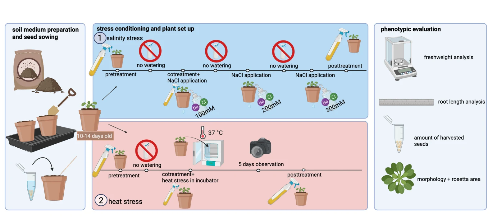
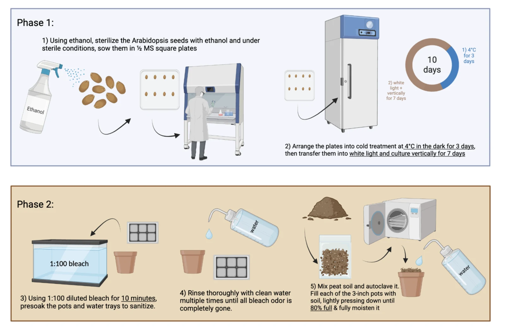
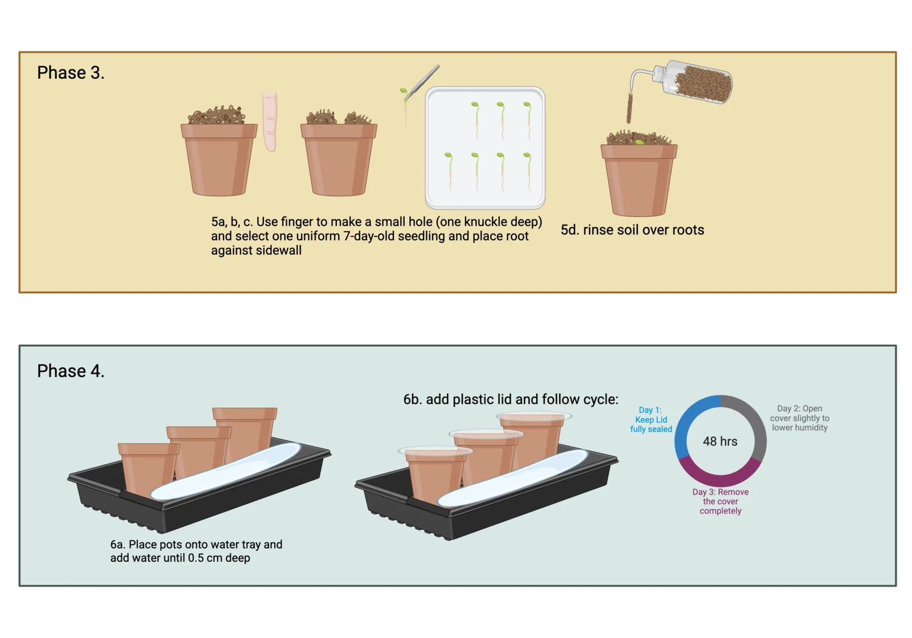
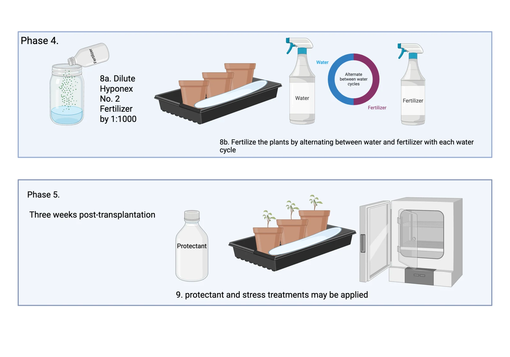
Materials and procedure, as written on the sheet
Materials
- 75% ethanol
- ½ MS square plates
- Bleach
- Soil pots
- Sterile ddH2O
Phase 1: seed sterilization and germination
- Sterilization and sowing: Sterilize Arabidopsis seeds with 75% ethanol for 2 min. Then, add 95% ethanol and allow the seeds to air-dry under sterile conditions. Once dry, sow the seeds on square plates containing ½ MS medium.
- Arrangement and growth: Arrange the plates into cold treatment at 4 °C in the dark for 3 days, then transfer them into white light and culture vertically for 7 days
Phase 2: soil and pot preparation
- Sanitization (optional): Using 1:100 diluted bleach for 10 minutes, presoak the pots and water trays to sanitize. Rinse thoroughly with clean water multiple times until all bleach odor is completely gone. To avoid strong chemical odors, it is recommended to be performed within a hood.
- Soil preparation: Mix peat soil and autoclave it. Fill each of the 3-inch pots with soil, lightly pressing down until 80% full, and thoroughly water the surface, ensuring the entire soil body is fully moistened before starting seedling transplantation.
Phase 3: transplantation
- Seedling transfer
- Using a finger, make a small hole (about one knuckle deep) in the center of the soil. When planting more than 1 seed, space the needed amount of holes evenly across the soil surface.
- Select 1 uniform, healthy, 7-day-old seedling and gently lift it with tweezers
- Place the root against the sidewall of the hole
- Using a wash bottle, rinse soil over the roots to ensure that they are naturally covered. AVOID touching the root system directly with tweezers or fingers. During this process use tweezers to support the seedling from beneath the cotyledons. Never clamp the seedling directly.
Phase 4: acclimatization and post-transplant care
- Humidity management
- Place the pots onto a water tray and add water until the bottom of the pots are submerged in around 0.5 cm deep water.
- Cover with a transparent lid, maintaining humidity for 3 days. Day 1: keep the cover fully sealed. Day 2: open the cover slightly to lower humidity. Day 3: to ensure good circulation and fungal growth, remove the cover completely.
- Watering: Adjust the watering frequency based on growth chamber humidity. Soil surface should undergo dry-wet cycles. Keep the surface dry for no more than 1 day to prevent dehydration.
- Fertilization: Dilute 花寶2號 (Hyponex No. 2 Fertilizer) to 1:1000 and fertilize by alternating between water and fertilizer with each watering cycle. Both should be applied via subirrigation (tray bottom). Avoid direct watering on the soil surface unless the soil is too dry to absorb water from the bottom.
Phase 5: experimental treatment and harvesting
- Experimental treatment: At approximately 3 weeks post-transplantation, the protectant/stress treatments can be applied. The timeframe can be adjusted between 2 to 4 weeks based on the plant growth. Treatments should begin no later than 4 weeks post-transplant to avoid bolting and growth arrest. Take photos regularly (recommended daily) to track progress to identify optimal starting point.
- Support for propagation: Cover the sharp end of a bamboo stake with a 200 µL tip before inserting to prevent direct soil contact and mold growth. Once the inflorescence reaches 20 cm, insert the bamboo stake into the soil. Secure the inflorescence to the stake using orchid clips, preventing lodging. Make sure not to damage the stems with any clips.
- Seed harvesting (only for plants without any stress treatments): Siliques will begin to dry about 1.5 months post-transplant; reduce watering frequency at this stage. Once 80% of all the siliques on the plant are dry, stop watering the plant completely to allow full drying before seed collection.
Note: plants not used for the experiments can be kept for seed propagation.
Salinity stress on agar UsedApplying various salinity stress levels to Arabidopsis on agar to evaluate which concentration of trehalose protectant provides the best rescue effectiveness.
Trehalose is the candidate protectant and the root is photographed every day for ten days. Twelve conditions cross four trehalose levels with three salt levels.
- Design
- 0, 1, 5, 10 mM trehalose × 0, 150, 250 mM NaCl
- Timeline
- 4 days at 4 °C, 4 days in the chamber, 10 days observed
- Ran for
- Experiment sets 4 to 8, May to August 2026
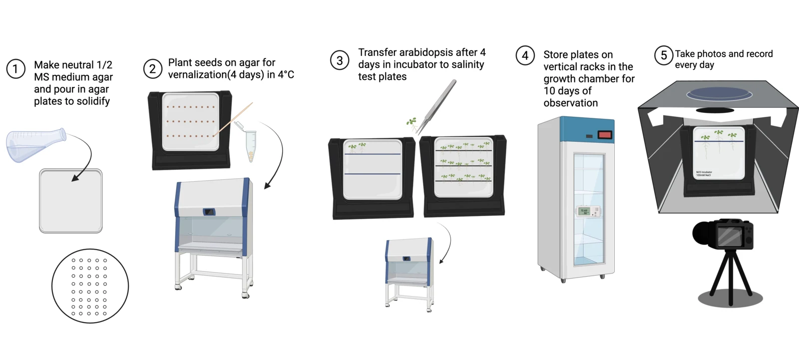
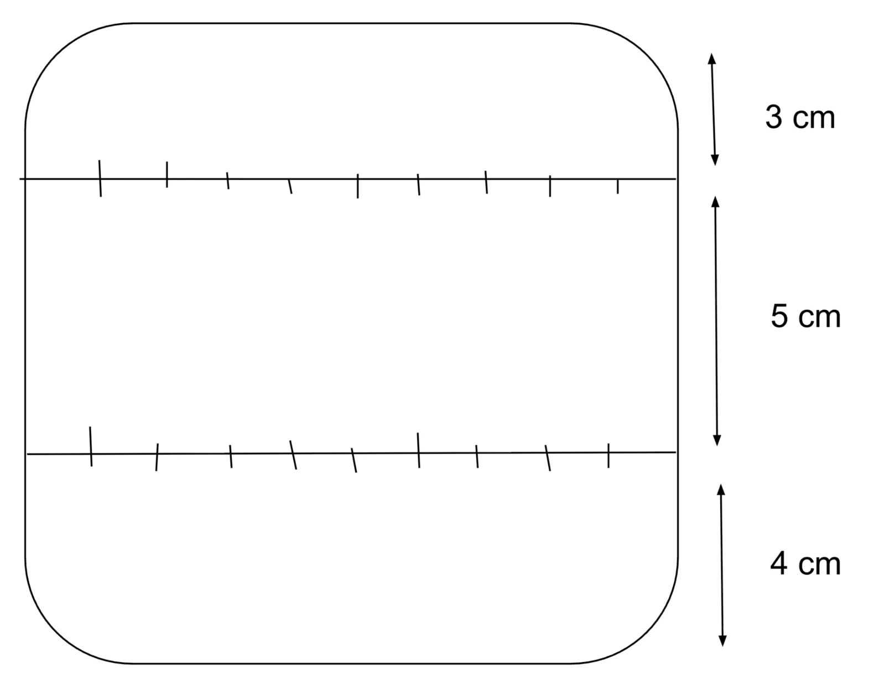
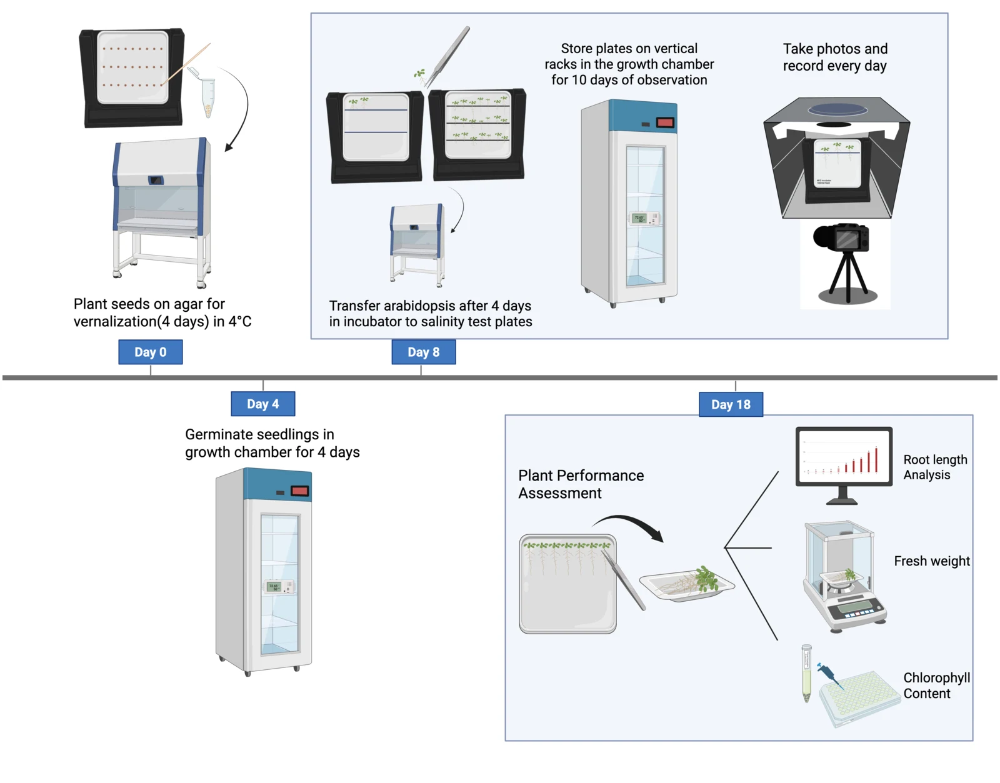
Materials and procedure, as written on the sheet
Materials
- Agar: ½ MS medium powder, MES buffer, distilled water, sucrose, agar powder, pH meter, 2000 mL beaker, hot plate, magnetic stirring rod, aluminum foil
- Transfer: tweezer, new sets of neutral agar
- Apply treatments: trehalose, NaCl solution, sterile ddH2O, incubator, rack
A. ½ MS medium agar for vernalization
The following protocol is for 750 mL of agar (15 neutral agar plates).
| Ingredient | Amount |
|---|---|
| ½ MS medium powder | 1.725 g |
| MES buffer (0.5 g/L) | 0.375 g |
| Distilled water | 750 mL |
| Sucrose (1%) | 7.5 g |
| Agar powder (1%) | 7.5 g |
- Add the contents into a 2000 mL beaker
- Use a hot plate to stir (with a magnetic stirring rod) until no sediments are left in the solution
- Use the pH probe and measure the pH of the solution, make sure the pH is between 5.7 and 5.8 (use KOH to adjust the medium pH)
- Wrap the neck of the flask with aluminum foil and stick a piece of indicator tape on top
- Autoclave for 20 minutes at 127 °C. Wait for the pressure to reach 0 before retrieving the flask
- During the autoclave, label all of the petri dishes with a marker in the biosafety cabinet. Right top: date and arrow pointing up to show direction for pictures
- Transfer half of the flasks to BSC. Store the other half of the flasks in the water bath while pouring so that it does not solidify
- Make sure its surface is dry by wiping the flasks with a paper towel before spraying 70% EtOH on them
- Pour each of the medium mixtures into their square petri dishes (around 50 mL)
- Transfer the other half of the flasks into the BSC
- Pour each of the medium mixtures into their square petri dishes
- Let the petri dishes solidify at room temperature under the BSC
B. Planting and treating Arabidopsis seeds
- Open the BSC
- Use the seed template (3 cm, 5 cm, 4 cm) to plant 18 seeds on each agar plate in two rows, nine seeds on each row
- Use breathable tape to seal each of the agar plates
- Label the vernalization date
- Wrap the agar plates with aluminum foil
- Vernalize in the 4 °C refrigerator for 4 days
- Incubate in the growth chamber for 4 days
C. ½ MS agar plate preparation (salinity test trial plates)
The following protocol is for 600 mL of agar, 12 agar plates: control (no trehalose), 1 mM, 5 mM and 10 mM trehalose, each crossed with control (no NaCl), 150 mM NaCl and 250 mM NaCl.
| Ingredient | Amount |
|---|---|
| ½ MS medium powder (w/o sucrose) | 1.38 g |
| MES buffer | 0.3 g |
| Distilled water | 600 mL |
| Sucrose (1%) | 6 g |
| Agar powder (1%) | 6 g |
- Add ½ MS medium powder (w/o sucrose), MES buffer, distilled water, and sucrose into a 2000 mL beaker.
- Use a hot plate to stir (with a magnetic stirring rod) until no sediments are left in the solution
- Use the pH probe and measure the pH of the solution, make sure the pH is 5.7 to 5.8. If the pH is too low, add 0.1 M KOH slowly to increase it
- Pour 200 mL of mixture out into another flask to separate into three flasks, label with [0 mM], [150 mM] and [250 mM]
- Add 2.192 g of NaCl into the flask labelled [150 mM NaCl]
- Add 3.652 g of NaCl into the flask labelled [250 mM NaCl]
- Prepare 4 flasks for different trehalose concentrations (0, 1, 5, 10 mM)
- Prepare 12 flasks and pour the respective trehalose and NaCl concentration in each of the flasks, making sure there is 50 mL in each of the flasks (12), and label each flask clearly according to their trehalose concentrations
- To their respective trehalose concentrations, add:
Trehalose concentration Amount of trehalose (for 50 mL of medium) 0 mM 0 μL 1 mM 500 μL 5 mM 2500 μL 10 mM 5000 μL - Add 0.5 g of agar into each flask.
- Wrap the necks of the flasks with aluminum foil and stick a piece of indicator tape on top
- Autoclave for 20 minutes at 127 °C. Wait for the pressure to reach 0 before retrieving the flask
- During the autoclave, label the petri dishes with a marker in the biosafety cabinet. Right top: date and arrow pointing up to show direction for pictures. Bottom lid: different trehalose concentrations and NaCl concentration or control
- Transfer half of the flasks to BSC. Store the other half of the flasks in the hot bath while pouring so that it does not solidify
- Make sure its surface is dry by wiping the flasks with a paper towel before spraying 70% EtOH on them
- Pour each of the medium mixtures into their square petri dishes (around 50 mL)
- Transfer the other half of the flasks into the BSC
- Pour each of the medium mixtures into their square petri dishes
- Let the petri dishes solidify at room temperature under the BSC
D. Transferring Arabidopsis
- Take the stack of agar plates wrapped in aluminum foil out of the refrigerator
- Open the BSC
- Spray alcohol on the agar plates before placing them inside the BSC
- Use a marker to draw a straight line along a ruler 3 cm from the top of the plate using the seed template
- Draw 8 dots at the ends of the roots
- Place the square plates vertically at a slight angle
- Choose 8 germinated seeds after vernalization that have similar root lengths or germination status and align the endpoints of their roots to the line drawn on the plate
- Seal the plates with breathable tape and label the incubation date with a marker before placing the vertical plates on the stacks in the growth chamber, slightly tilted towards the back
E. Recording (every day)
- Observe for 10 days
- Set up the black background platform and turn on the lights
- Take out the agar plates one by one out of the growth chamber and place them on the black background platform (bottom lid facing up)
- Take pictures (clearly record the labels, no reflections and avoid water vapor from covering the view of the plants)
- Place the agar plates back, tilted slightly to the back on the rack, in the growth chamber
- Weigh the fresh weight
Salinity stress on hydroponics UsedApplying salinity stress at different time periods to Arabidopsis on hydroponics to evaluate whether our protectant are effective at rescuing Arabidopsis.
Seeds sit in agar-filled Eppendorf lids over a 48-well rack; salt comes from a 3 M NaCl stock in ½ MS.
- Rig
- 48 punched Eppendorf lids, 250 µL agar each, over 2 mL of 0.1x MS
- Stock
- 3 M NaCl in ½ MS, autoclaved
- Ran for
- The hydroponic salinity record and its chlorophyll sheet
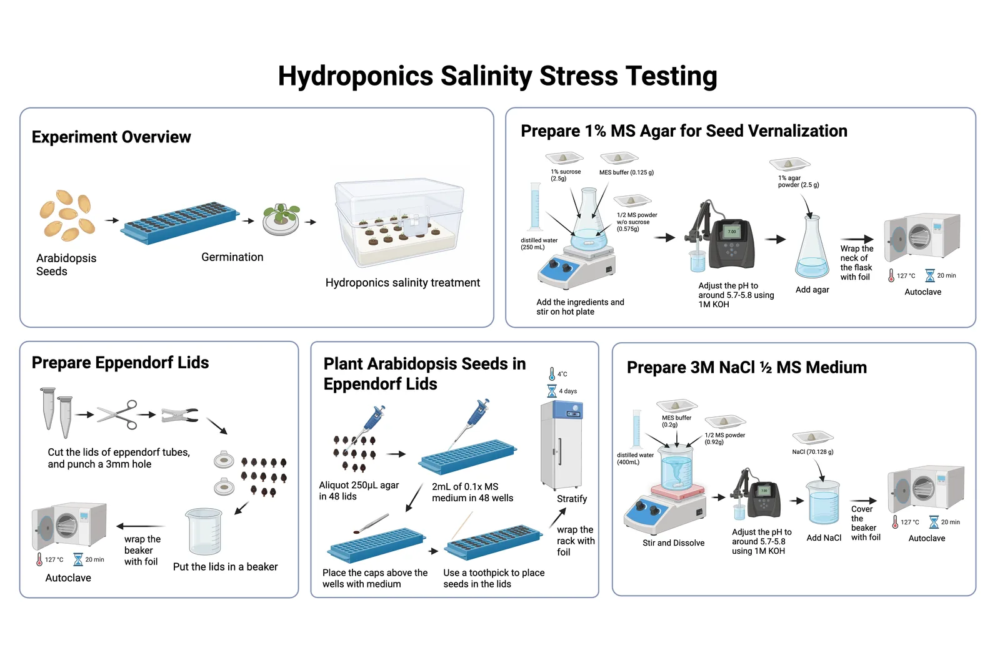
Materials and procedure, as written on the sheet
Materials
- ½ MS medium powder
- MES buffer
- Distilled water
- Sucrose
- Agar powder
- NaCl
- 2000 mL beaker
- 500 mL flask
- pH meter
- Hot plate
- Magnetic stirring rod
- Aluminum foil
- Tweezers
- Eppendorf microtube
- Scissors
- Leather punch
- Tube rack
Prepare Eppendorf lids
- Use scissors to cut off the lid of the Eppendorf microtube.
- Use leather punch to punch a hole on the Eppendorf lid with a diameter of 3 mm.
- Put the lids into a small beaker.
- Wrap the beaker with aluminum foil and stick a piece of indicator tape on top.
- Autoclave for 20 minutes at 127 °C.
- Wait for the pressure to reach 0 before opening the autoclave.
Prepare 1% MS agar for seed vernalization
The following protocol is for 250 mL of 1% agar.
| Ingredient | Amount |
|---|---|
| ½ MS powder (w/o sucrose) | 0.575 g |
| MES buffer | 0.125 g |
| Distilled water | 250 mL |
| Sucrose (1%) | 2.5 g |
| Agar powder (1%) | 2.5 g |
- Add the ½ MS powder, MES buffer, distilled water, and sucrose into a 500 mL flask.
- Use a hot plate to stir (with a magnetic stirring rod) until no sediments are left in the solution.
- Use the pH probe and measure the pH of the solution, make sure the pH is 5.7 to 5.8. If the pH is too low, add 0.1 M KOH slowly to increase it.
- Add agar powder into the solution.
- Wrap the neck of the flask with aluminum foil and stick a piece of indicator tape on top.
- Autoclave for 20 minutes at 127 °C.
- Wait for the pressure to reach 0 before opening the autoclave.
Plant Arabidopsis seeds in Eppendorf lids
- Prepare 48 Eppendorf microtube lids.
- Add 250 μL of agar into each lid.
- Wait until it solidifies.
- Soak a tube rack in bleach for 10 minutes and rinse it with ddH₂O until there is no smell of bleach on the tube rack.
- Add 2 mL of 0.1x MS medium into 48 wells in the tube rack.
- Put the Eppendorf lids onto the wells using tweezers.
- Use an autoclaved toothpick to pick up one seed and plant Arabidopsis seed onto the agar from the hole of the lid.
- Wrap the tube rack with aluminum foil.
- Place the tube rack into the refrigerator at 4 °C for 4 days to stratify.
- Put the tube rack into the growth chamber after 4 days of stratification.
Prepare 3 M NaCl in ½ MS medium
| Ingredient | Amount |
|---|---|
| ½ MS powder (without sucrose) | 0.92 g |
| MES buffer | 0.2 g |
| Distilled water | 400 mL |
| NaCl | 70.128 g |
- Add ½ MS powder, MES buffer, and ddH2O into a 500 mL flask
- Use the hot plate to stir (with a stirring rod) until no sediments are left in the solution
- Determine pH of the solution and adjust the pH using a pH probe to around 5.7 to 5.8 using 1 M KOH
- Add 70.128 g of NaCl in batches slowly into the flask. Use the stirring rod to dissolve all NaCl into the medium.
- Wrap the neck with aluminum foil and place the indicator tape on top
- Autoclave at 127 °C for 20 minutes
- Wait for the pressure to reach 0 before opening the autoclave
Heat stress on agar UsedApplying heat stress to Arabidopsis on agar to evaluate which treatment time of CH bio peptide provides the best rescue effectiveness.
The test article is a commercial peptide (CH Biotech 富肽二號). Four groups: control, pre-, co- and after-treatment around 37 °C thermopriming.
- Heat
- 37 °C under white light, 5 days in the incubator
- Spray
- Peptide at 1/500 (40 µL in 19.96 mL), about 2 sprays from 15 cm
- Ran for
- 15 August 2026 and the 13 August horizontal-plate trial
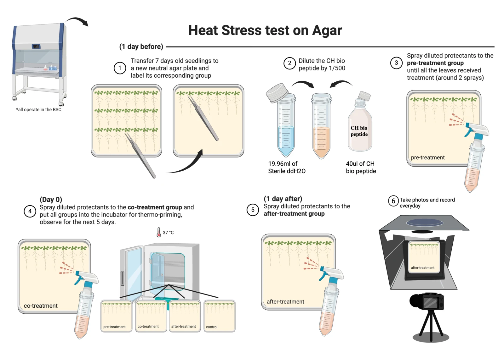
Materials and procedure, as written on the sheet
Materials
- Agar: ½ MS medium powder, MES buffer, distilled water, sucrose, agar powder, pH meter, flask, stirring bar
- Transfer: tweezer, new sets of neutral agar
- Apply treatments: CH Biotech peptide (富肽二號), sterile ddH2O, 50 mL centrifuge tube, sprayer, incubator, rack, thermometer
A. Neutral ½ MS medium agar for vernalization
The following protocol is for 200 mL of agar (4 neutral agar plates).
| Ingredient | Amount |
|---|---|
| ½ MS medium powder | 0.46 g |
| MES (0.5 g/L) | 0.1 g |
| Distilled water | 200 mL |
| Sucrose (1%) | 2.0 g |
| Agar powder (1%) | 2.0 g |
- Add the contents into a 500 mL flask
- Use a magnetic stirrer to dissolve all ingredients (with a magnetic stirring rod inside) until no sediments are left in the solution
- Use the pH meter and measure the pH of the solution, make sure the pH is 5.7 to 5.8 (use KOH to adjust the medium pH)
- Wrap the neck of the flask with aluminum foil and stick a piece of indicator tape on top
- Autoclave at 127 °C for 20 minutes. Retrieving the flask until the pressure become 0 atm
- During the autoclave, label all of the petri dishes with a marker in the biosafety cabinet. Right top: date and arrow pointing up to show direction for pictures
- Transfer half of the flasks to BSC. Store the other half of the flasks in the hot bath while pouring so that it does not solidify
- Make sure the surface is dry by wiping the flasks with a paper towel before spraying 70% EtOH on them
- Pour each of the medium mixtures into their square petri dishes (around 50 mL per dish)
- Transfer the other half of the flasks into the BSC
- Pour each of the medium mixtures into their square petri dishes
- Let the petri dishes solidify at room temperature in the BSC
B. Planting and treating Arabidopsis seeds
- Open the BSC
- Use the seeding template (3 cm, 5 cm, 4 cm) to seeding 18 seeds on each agar plate in two rows, nine seeds on each row
- Use breathable tape to seal the plates
- Label the vernalization date
- Wrap all agar plates with aluminum foil
- Vernalize in the 4 °C refrigerator for 4 days
- Incubate in the growth chamber for 7 days to germination
C. Transferring seedlings
- Take the stack of agar plates wrapped in aluminum foil out of the refrigerator
- Open the BSC
- Spray alcohol on the agar plates before placing them inside the BSC
- Use a marker to draw a straight line along a ruler 5.5 cm from the top of the plate using the seed template
- Place the square plates vertically at a slight angle
- Choose 12 germinated seeds that have similar root lengths or germination status and align the endpoints of roots to the line drawn on the plate. 4 groups: control; pre-treatment (1 day before); co-treatment (day 0); after-treatment (1 day after)
- Seal the plates with breathable tape and label the transferring date with a marker before placing the vertical plates on the rack in the growth chamber, slightly tilted towards the back
D. Applying treatments
- Spray CH bio peptide on pre-treatment group (1 day before)
- Open the BSC
- Dilute the CH bio peptide by 1/500 dilution rate (19.96 mL of sterile ddH2O + 40 µL of peptide) into a 50 mL centrifuge tube
- Apply an individual sprayer onto the centrifuge tube
- Take out the plate labeled “pre-treatment”, place it vertically, spray the CH bio peptide toward the plants entirely from leaves to roots with a 15 cm distance in between (around 2 sprays, make sure all the plants received treatment)
- Seal the plates with breathable tape and put it back into the growth chamber
- Spray CH Biotech peptide (富肽二號) on co-treatment group (day 0)
- Open BSC
- Take out the plate labeled “co-treatment”, place it vertically, spray CH Biotech peptide toward the plants entirely with a 15 cm distance in between (around 2 sprays, make sure all the plants are sprayed evenly)
- Seal the plates with breathable tape
- Place all 4 groups of plates onto a rack while the plates stand with a slightly tilted angle, then place the rack entirely into the incubator at 37 °C under white light for thermopriming
- Observe the seedling for another 5 days in the incubator
- Spray CH bio peptide on after-treatment group (1 day after thermopriming)
- Open BSC
- Take out the plate labeled “after-treatment” from the incubator, place it vertically, spray CH bio peptide toward the plants entirely with a 15 cm distance in between (around 2 sprays, make sure all the plants are sprayed evenly)
- Seal the plates with breathable tape and place it back into the incubator
E. Recording (every day)
- Observe for 6 days (days after pretreatment)
- Set up the imaging platform with black background and white lights
- Take out the agar plates one by one out of the growth chamber and place them on the platform
- Take pictures (clearly record the labels, no reflections and avoid water droplet from covering the view of the plants)
- Place the agar plates back to the growth chamber with tilted slightly to the back on the rack
- After 6 days treatment, harvest the seedling and measure fresh weight, chlorophyll content for further analysis
Chlorophyll extraction UsedExtract chlorophyll of each set of Arabidopsis groups after plant experimental trials for readout data and analysis.
Convert a harvested plate of seedlings into total chlorophyll per gram of fresh weight, read at 663 and 645 nm in 80% acetone with Arnon's coefficients [1].
- Extraction
- Whole seedlings, 10 steel beads, −80 °C for 10 min, 80% acetone
- Read
- 200 μL per well, 3 wells per sample, A663 and A645
- Ran for
- Agar sets 4 to 8 and both hydroponic runs
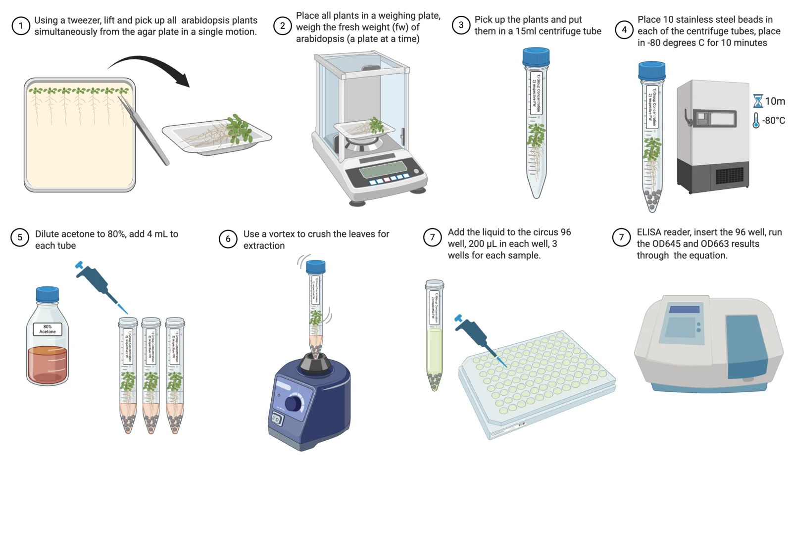
Materials and procedure, as written on the sheet
Materials
- Agar plates with plants
- Tweezer
- Tissue paper
- Weighing plate
- 15 mL centrifuge tube
- Marker
- Stainless steel beads
- Acetone
- Vortex machine
- OD machine
- Plate with wells to load samples
Procedure
- Using a tweezer, lift and pick up all Arabidopsis plants simultaneously from the agar plate in a single motion. Careful not to hurt the plants by squeezing the tweezer. Lift from below the leaf area.
- Put the plants on a tissue paper, lightly press to remove the agar sticking to the plants. Careful not to press the leaf areas too hard.
- Place all plants in a weighing plate, weigh the fresh weight (fw) of Arabidopsis (a plate at a time)
- Pick up the plants and put them in a 15 mL centrifuge tube, take care that the entire plant and the roots need to go in too
- Label the (1) group concentration and (2) respective fresh weight (fw) on the microtube
- Repeat these steps for as many times as the sets of Arabidopsis you are testing
- Place 10 stainless steel beads in each of the centrifuge tubes, place at −80 °C for 10 minutes
- Dilute acetone to 80%, add 4 mL to each tube
- Wait for the chlorophyll to extract, and can use a vortex or shake vigorously to crush the plants to speed up the process (done when plants are no longer green.)
- Label what samples are in each well before loading (very important)
- Add the liquid to the circus 96 well, 200 μL in each well, 3 wells for each sample. Blank OD for 200 μL 80% acetone
- ELISA reader, insert the 96 well, run the results through the equation below. Make sure to select the correct wavelength: A663, A645
Total chlorophyll content equation (mg/g), with V = 2 mL:
Bioreactor and measurement
SiO2 OD600 calibration of the inline photometers Protocol readyBuild a particle concentration vs. OD600 regression curve by cumulative titration of a known-concentration monodisperse silica (SiO2) microsphere suspension.
The two inline photometers are calibrated against a benchtop spectrophotometer using 1 µm silica microspheres as a stand-in for cells. Method after the iGEM microsphere standard curve [7] with a van de Hulst scattering estimate [8].
- Standard
- Tomicro SiO2, 1 µm, working stock 2.5 mg/mL
- Run
- 50 mL loop at ~60 mL/min, 1 mL in and 1 mL out per cycle, 45 to 60 cycles
- Status
- SOP v1.0; results go on Measurement
Materials and procedure, as written on the sheet
1. Purpose
This document provides a standard operating procedure for building a “particle concentration vs. OD600” regression curve by cumulative titration of a known-concentration monodisperse silica (SiO2) microsphere suspension. The goal is to simultaneously calibrate two inline photometers installed in a recirculating loop, using OD600 values measured on a benchtop spectrophotometer (standard 1 cm pathlength) as an external reference anchor, so that the resulting conversion factors can be applied to real-time optical monitoring in a high-cell-density perfusion bioreactor (HFM) system.
2. Materials and equipment
| Item | Specification / notes |
|---|---|
| Monodisperse SiO2 microsphere stock | Tomicro, density 2.3 g/cm³, solids content 2.5% (25 mg/mL), mean particle diameter 1 µm, refractive index 1.46 (589 nm, 25 °C), total volume 10 mL |
| Deionized (DI) water | For preparing the working stock and system circulation fluid |
| 100 mL beaker | Serves as the reservoir for the recirculating loop |
| Magnetic stir bar and stir plate | Keeps the suspension homogeneous; prevents microsphere sedimentation |
| Silicone tubing | Peristaltic-pump grade; connects beaker, pump, and the two photometers |
| Peristaltic pump | Recommended flow rate ~60 mL/min |
| Inline photometers | Two units, connected in series within the recirculating loop |
| Benchtop spectrophotometer | BioDrop or equivalent, capable of a 1 mL sample at 1 cm pathlength, 600 nm |
| Micropipettes and tips | 1000 µL and 100 µL ranges |
| Data log | Paper log sheet or spreadsheet |
3. Principle
For a solid sphere of diameter 1 µm and density 2.3 g/cm³, one particle weighs about 1.2 pg, so the 25 mg/mL stock holds about 2.08×10¹⁰ particles/mL. The van de Hulst anomalous diffraction approximation gives an extinction efficiency Qext ≈ 0.81 at 600 nm, a theoretical estimate of 1 mg/mL SiO2 ≈ OD600 2.3 (1 cm pathlength, single scattering). As OD approaches or exceeds 1.0, multiple scattering makes the measured value fall below the linear extrapolation.
Each cycle adds 1 mL of working stock, mixes, and withdraws a 1 mL sample, keeping the system volume constant at V = 50 mL:
With V = 50 and Cstock = 2.5 mg/mL: cycle 30, C ≈ 1.10 mg/mL (theoretical OD600 ≈ 2.5); cycle 45, 1.48 mg/mL (≈ 3.4); cycle 60, 1.74 mg/mL (≈ 4.0).
4. Safety precautions
- Wear gloves and eye protection when handling the SiO2 suspension to avoid splash contact with eyes and skin.
- If weighing out raw powder is ever required (outside the scope of this protocol, which uses only the liquid stock), work inside a fume hood to avoid inhaling dust.
- Before starting the peristaltic pump, confirm all tubing connections are securely fastened to prevent leaks or spray during operation.
- Follow the manufacturer's electrical safety guidelines when operating the spectrophotometer and inline photometers.
5. Reagent preparation
Combine 6 mL of the original stock (25 mg/mL) with 54 mL of DI water and mix thoroughly to obtain 60 mL of SiO2 working stock at 2.5 mg/mL. This uses 6 mL (150 mg) of the 10 mL original stock, leaving 4 mL (100 mg) in reserve, and supports approximately 60 cycles. Vortex or shake both the original stock and the working stock thoroughly before use, as the microspheres will slowly settle on standing.
6. Hardware assembly and system initialization
- Assemble the recirculating loop. Connect, in order: 100 mL beaker → silicone tubing → peristaltic pump → inline photometer 1 → inline photometer 2 → back to the beaker. Place a magnetic stir bar in the beaker on a stir plate.
- Establish the blank on both inline photometers. Add 50 mL of DI water to the beaker and start the pump (~60 mL/min) to fill the entire loop and both photometers, confirming no residual air bubbles remain. Allow 2 to 3 full loop turnovers (about 2 to 3 minutes) until the signal stabilizes, then record the blank readings from inline photometer 1 and 2.
- Establish the blank on the benchtop spectrophotometer. Withdraw 1 mL of DI water from the beaker and measure it as the blank, then replace it with 1 mL of fresh DI water so the beaker returns to 50 mL.
7. Experimental procedure
- (Optional) Preliminary mini-scan. Cumulatively add 2, 5, 10 and 20 mg of SiO2 (80, 200, 400 and 800 µL of working stock), recording the inline photometer reading after each addition, to confirm the measured slope is on the same order as the theoretical ~2.3 OD·mL/mg.
- Each cycle. With the pump running, pipette 1 mL of working stock into the beaker. Keep stirring and pumping for 2 to 3 loop turnovers. Record inline photometers 1 and 2 simultaneously. Withdraw a 1 mL sample, mix briefly, and immediately measure OD600 on the benchtop spectrophotometer. The beaker is back at 50 mL and the next cycle can begin.
- Repeat for a recommended total of 45 to 60 cycles. OD600 should approach 2.5 around cycle 30; the remaining cycles show the saturation behavior. The reserve 4 mL of stock can be diluted on the spot to continue the run.
9. Quality control and troubleshooting
- Keep the beaker stirring the whole time and measure withdrawn samples promptly, so the microspheres do not settle.
- If the two inline photometers diverge persistently, flag those points (possible sedimentation in the tubing or a positional effect) rather than discarding them.
- Microbubbles cause strong scattering artifacts, so confirm the loop is fully degassed at startup.
- Use only the points in the linear range for the formal regression, and flag the non-linear, high-concentration points as the instrument's effective upper limit.
- Re-run this protocol if the microsphere batch or the instrument hardware changes.
10. Recommended data analysis
Plot the theoretical concentration Cn against inline photometer 1, inline photometer 2 and benchtop OD600; regress each within its linear range; use the benchtop regression as the external reference to build an “inline reading → standard OD600” conversion; record R² and residual standard deviation; and keep the raw readings for every cycle. The data recording template and the full derivation are in the PDF.
Bioreactor perfusion run UsedCulture in the hollow fibre module, with the protectant collected on the shell side.
There is no bench sheet for this one: the set-up, flow rates and sampling live with the reactor build.
- Where
- Hardware → Bioreactor
- Readouts
- Inline photometer, pressure and flow, shell-side sterility plates
- Ran for
- The photometer growth traces and the containment plates on Safety
- Hardware → Bioreactor: how the module, pump and photometers are built and run
- Measurement → Bioreactor: the photometer, pressure and flow numbers and their state
- Safety → Bioreactor safety: the shell-side sterility plates that test containment
Where the results are
This page is procedure only. Root length, fresh weight and chlorophyll results are on Plants. The gels, blots and the cycle-by-cycle reasoning are on Engineering, and the construct build record on Parts. Photometer and OD600 methodology is on Measurement, and containment, waste and training are on Safety and Security.
References
- Arnon DI. Copper enzymes in isolated chloroplasts. Polyphenoloxidase in Beta vulgaris. Plant Physiology 1949;24(1):1-15.
- Bradford MM. A rapid and sensitive method for the quantitation of microgram quantities of protein utilizing the principle of protein-dye binding. Analytical Biochemistry 1976;72:248-254.
- Viogene. Mini Plus Plasmid DNA Extraction System handbook.
- Thermo Fisher Scientific. HisPur Ni-NTA Spin Purification Kit and Slide-A-Lyzer G3 Dialysis Cassettes instructions.
- Sigma-Aldrich. CelLytic B Cell Lysis Reagent product information.
- Bio-Rad. Gene Pulser Xcell Electroporation System instruction manual.
- Beal J, Farny NG, Haddock-Angelli T, et al. Robust estimation of bacterial cell count from optical density. Communications Biology 2020;3:512.
- van de Hulst HC. Light Scattering by Small Particles. New York: John Wiley & Sons; 1957.